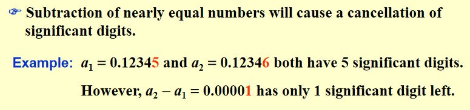
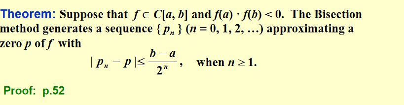
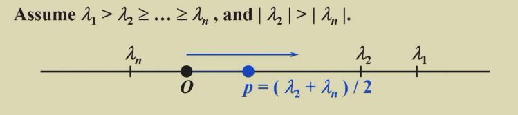

数值分析笔记
数值分析 第一讲 误差计算
一、数值分析简介
1.目的：解决根号、幂指函数、微分和积分、矩阵等的计算问题。
2.计算过程
（1）计算方法
·方法一：逼近
·方法二：变换
（2）判断计算方法的好坏，以及不同情况下各种方法的适用性。
3.课程内容
·经典逼近方法的介绍
·方法的工作原理，以及何时效果好
·科学计算基础
二、舍入与计算机代数
1.讨论一：积分逼近
\(\int_{0}^{1}e^{x^2}dx\)
【解法】泰勒展开
（1）何处展开：此处选择\(x=0\)，便于计算。
（2）展开的项数与截断（truncation）
【解】
（1）取前4项\(S_4\)，在\([0,1]\)区间上积分进行逼近
（2）误差的估计
·本计算的误差由两部分组成：舍入误差、截断误差。
·舍入误差：使用有限位数的浮点数，近似表示前4项的计算结果，带来的误差。
·截断误差：丢弃前4项以外的项引起的误差。
（3）误差的计算
·误差计算的关键：使用合理的上界，对误差进行估计。
·舍入误差：两个浮点数四舍五入，3位小数点，一个浮点数四舍五入到小数点后3位，带来误差为\(0.0005\)，则两个浮点数四舍五入，舍入误差上限为\(0.0005*2 = 0.001\)。
·截断误差：根据余项加减交错、绝对值严格递减的形式，用第五项的近似值作为截断误差的一个上界。
2.总结
（1）截断误差：用级数有限和近似级数无穷和，带来的误差。
（2）舍入误差：用有限位数的浮点数，近似表示无限位数的浮点数，带来的误差。
3.实数的标准化浮点表示
 ·标准表示格式：\(\pm 0.d_1d_2\dots d_k * 10^{n}, where \space 1 \leq d_i \le 9\space and \space0 \leq d_i \le 9\)
【注】小数末尾的0有意义，表示精确程度。
·标准表示格式：\(\pm 0.d_1d_2\dots d_k * 10^{n}, where \space 1 \leq d_i \le 9\space and \space0 \leq d_i \le 9\)
【注】小数末尾的0有意义，表示精确程度。
三、浮点运算与误差
1.浮点数的近似表示\(fl(y)\)
（1）截断(chopping)：直接丢弃有限位之后其他的位。
（2）舍入(rounding)：四舍五入、向上、向下、向零、向无穷大舍入等。
2.绝对误差与相对误差
（1）绝对误差\(|p-p^*|\)
（2）相对误差\(\frac{|p-p^*|}{|p|}\)
3.有效数字定义
 若\(t\)是满足\(\frac{|p-p^*|}{|p|}<5 \times 10^{-t}\)的最大非负整数，则称该数有\(t\)位有效数字。
若\(t\)是满足\(\frac{|p-p^*|}{|p|}<5 \times 10^{-t}\)的最大非负整数，则称该数有\(t\)位有效数字。
（1）Chopping误差分析
·相对误差定义式
·放缩：把分子放大为\(1\)，分母缩小为\(0.1\)
·得到误差上界：\(10^{-k+1}\)
（2）Rounding误差分析
·与Chopping步骤类似
·分子只需放大到\(0.5\)
·得到误差上界：\(0.5 \times 10^{-k+1}\)
4.【注意事项一】避免大小相近数字相减

两个大小相近的数字直接相减，会导致有效数字位数减少，增大相对误差。
【例】
\(a_1 = 0.12345, \space a_2 = 0.12346\)
\(a_2 - a_1 = 0.00001\)
\(a_1, a_2\)均为\(5\)位有效数字，\(a_1 - a_2\)有效数字仅有\(1\)位。
5.【注意事项二】避免除以很小的数
 ·除以很小的数，会增大误差。
·除以很小的数，会增大误差。
·解决方法：公式变换
·公式正式由计算机运算前，尽量简化公式。
6.【讨论二】函数计算
 （1）直接运算：
（1）直接运算：Chopping和Rounding的相对误差均较大。
（2）简化：使用秦九韶算法，相对误差减小。
（3）乘法误差的估计
·\(|a+\epsilon_{a}| \cdot |b+\epsilon_{b}|\)
四、算法和收敛性
1.算法的稳定性
（1）稳定：输入数据的小幅度变化，只会导致输出数据的小幅度变化。
（2）不稳定：输入数据的小幅度变化，会大幅影响输出结果。
（3）条件稳定：对于特定输入数据是稳定的，而对于其他数据不稳定。
2.误差的线性增长、指数增长——对稳定性的量化描述
 对于算法经过\(n\)步运算后：
对于算法经过\(n\)步运算后：
（1）指数增长误差：\(E_n = C^{n}E_0\)
（2）线性增长误差：\(E_n = CnE_0\)
【注】误差增长
 ·线性增长误差通常不可避免，若\(C, E_0\)均较小，则算法可接受。此时进一步提高精度的方法是增加有效位数，减少\(E_0\)；或减少\(C\)。
·线性增长误差通常不可避免，若\(C, E_0\)均较小，则算法可接受。此时进一步提高精度的方法是增加有效位数，减少\(E_0\)；或减少\(C\)。
·误差指数增长的算法，通常需要避免。
3.【例】计算积分
【方法一】递推法（不稳定）
 （1）使用递推公式\(I_n = 1-nI_{n-1}\)
（1）使用递推公式\(I_n = 1-nI_{n-1}\)
（2）对于\(I_0\)的估算：\(\frac{1}{e(n+1)}\lt I_n \lt \frac{1}{n+1}\)
（3）误差的累积：\(|E_n| = n|E_{n-1}| = \dots = n!|E_0|\)
【方法二】变换公式，改为稳定算法
（1）变换递推式的形式：\(I_{n-1} = \frac{1}{n}(1-I_n)\)
（2）取大于实际所需\(N\)的\(N^*\)，往更小的\(N\)进行递推。
（3）\(I_{N^*}\)的估计：同样使用不等式\(\frac{1}{e(n+1)}\lt I_n \lt \frac{1}{n+1}\)进行估计，取上下界的均值。
（4）误差的累积：\(E_{n} = \frac{1}{N(N-1)\cdots(n+1)}E_{N}\)
【实验提示】
递推法
数值分析 第二讲 单变量方程的解法
一、二分法
1.介值定理——说明解的存在性
·前提：连续性
·结论：介于\(f(a), f(b)\)的函数值对应的根的存在性
2.二分法绝对误差

3.二分法收敛条件
（1）绝对误差收敛条件：精确度有限。
\(|p_N - p_{N - 1}| < \epsilon\)
（2）相对误差收敛条件：采用相对误差作为收敛条件的实际情况更多，一般更适合作为收敛终止条件。
\(\frac{|p_N - p_{N - 1}|}{|p_N|} \lt \epsilon\)
（3）函数绝对值收敛条件：\(|f(p_N)|<\epsilon\).
4.计算注意事项：
判断区间如何二分收紧时，应计算\(sign(FA) \cdot sign(FB) > 0\)而非\(FA \cdot FB> 0\)。
·后者算出的数值可能跳出有效区间。
·原因：有效位数不足。
5.二分法的问题
（1）收敛速度慢，可能丢弃运算中间过程产生的较为精确的解。
（2）无法解决复根、多重根的问题。
二、不动点迭代
1.\(f(x) = 0 \leftrightarrow x = g(x)\)
·\(x\)是\(f(x)\)的零点。
·\(x\)是\(g(x)\)的不动点。
2.思想：为了求解某函数的零点，可通过适当的形式变换，将问题等价转换为求解另一函数的不动点。
3.收敛情况判断

运用不动点定理，根据函数在区间内的导数绝对值是否\(\ge 1\)进行判断：前二者收敛，后二者发散。
4.不动点定理
（1）前提一（函数值的有界性）：\(\forall x \in [a, b], g(x) \in [a, b]\).
（2）前提二（导数绝对值小于某个位于\((0, 1)\)区间的常数\(k\)）：区间\([a, b]\)中导数存在，且其绝对值小于某个常数\(k, 0 < k < 1\)。
（3）结论：对于\([a, b]\)中任意一个初始点\(p_0\)，采取不动点迭代法，作迭代\(p_n = g(p_{n - 1})\)，都能收敛于唯一的不动点\(p\).
【证明】
（1）由介值定理易证不动点存在性。
（2）用反证法证明不动点唯一性：
假设存在两个不动点\(p, q\), 则存在点\(p, q\)之间的一点\(\epsilon\)使得
\(g(p) - g(q) = g'(\epsilon)(p - q) \Rightarrow g'(\epsilon) = 1\)，与导数绝对值被小于1的常数\(k\)控制的前提矛盾。
（3）不动点迭代收敛性证明：
利用中值定理、导数绝对值小于等于\(k\)的前提，有：
\(|p_n - p| = |g(p_{n-1}) - p| = |g(p_{n - 1}) - g(p)| = |g'(\epsilon)(p_{n-1} - p)| \le k|p_{n-1} - p| \le \cdots \le k^n|p_0 - p|\).
5.不动点迭代法的误差上界
\(|p_n - p| \le \frac{1}{1 - k}|p_{n+1} - p_n| \cdots (1)\)
\(|p_n - p| \le \frac{k^n}{1 - k}|p_1 - p_0| \cdots (2)\)
【理解】
·在迭代计算过程中，\(p\)是未知的，因此隐式的绝对误差\(|p_n - p|\)不能直接作为迭代运算的终止条件，而是应该通过某些变形、放缩处理，获得某些由迭代计算结果描述的、易于计算的显式上界，以之判断迭代运算应于何时终止。
·\((1)\)式用实际计算所得相邻两项的误差\(|p_{n + 1} - p_n|\)，描述了\(|p_n - p|\)的一个误差上界，可以作为算法的终止条件。
·\((2)\)式可以估计迭代次数，减少无效计算。
·\(k\)值尽量缩小，可以减少迭代次数。
6.【例】使用不同的函数形式进行不动点迭代
下列各函数均用于方程\(x^3 + 4x^2 - 10 = 0\)在区间\([1, 2]\)内根的计算，但由于形式上的差异，而导致不动点迭代的收敛性、收敛速率各不相同。

（1）对\(g_i(x)\)求导，通过导数绝对值的上界，对不动点迭代的效果好坏进行判断。
（2）\(g_1(x)\)两边同时添加\(x\)，不作其他变形：求导发现绝对值超过\(1\)，希望不大。
（3）后三个函数形式恰当，可以满足不动点迭代的充分条件。
【思考】如何得到上述各式？
三、不动点迭代——牛顿迭代法
1.基本思想：使用一阶泰勒展开式，对一个非线性方程进行线性化处理，以达到化繁为简的目的。
2.算法推导过程与特点
（1）推导过程

·对\(f(p)\)在点\(p_0\)处进行一阶Taylor展开，下列式子近似成立：
\(f(p) \approx f(p_0) + f'(p_0)(p - p_0)\)
·利用上式求解\(p\)，即得\(p \approx p_0 - \frac{f(p_0)}{f'(p_0)}\)
·上式获得的\(p\)即作为\(p_1\)，再将\(p_1\)输入迭代式子，进行下一步迭代，由此获得的迭代公式为：
\(p_n = p_{n - 1} - \frac{f(p_{n - 1})}{f'(p_{n - 1})}\)
（2）算法特点
·算法精确的前提：二阶项\((x - p_0)^2\)足够小，可以舍弃。
·思想：使用线性函数逼近原始函数。
3.牛顿迭代法收敛性定理（求解函数零点）

·前提：二阶连续可导，且其零点\(p\)满足\(f(p) = 0, f'(p) \ne 0\)。
·结论：存在\(\delta > 0\)，使得对任意初始点\(p_0 \in [p - \delta, p + \delta]\)，运用牛顿法迭代，所得序列都可以收敛于\(p\).
【证明】
牛顿迭代法即\(p_n = g(p_{n - 1})\)，满足：
\(g(x) = x - \frac{f(x)}{f'(x)}\)
（1）\(g(x)\)在\(p\)的\(\delta\)邻域内的连续性：
由二阶连续可微，\(p'(x) \ne 0\)易证。
（2）\(|g'(x)|\)被常数\(0 < k < 1\)控制在\(p\)的\(\delta\)邻域内：
由于\(g'(x) = \frac{f(x)f''(x)}{f'(x)^2}\)，\(g'(p) = 0\)，且\(g'(x)\)连续，故存在某邻域，使得\(|g'(x)| < k, 0 \lt k \lt 1, k \in R\).
（3）\(g(x)\)将区间\([p - \delta, p + \delta]\)映射到\([p - \delta, p + \delta]\)：
\(|g(x) - p| = |g(x) - g(p)| = |g'(\epsilon)(x - p)| \le k |x - p| \lt |x - p| \lt \delta\).
【注】\(p_0\)的选取对迭代结果的影响较大。
数值分析 第三讲
一、一元方程组迭代解法的误差分析
1.收敛的阶数与渐进误差
设\(\{p_n\} \rarr p\)，若存在正常数\(\alpha, \lambda\)，使得：
\(lim_{n \rightarrow \infty} \frac{|p_{n+1} - p|}{|p_n - p| ^ \alpha} = \lambda\)
称：序列\(\{p_n\}\)收敛于\(p\)的阶数为\(\alpha\)，渐进误差是\(\lambda\).
【理解】收敛阶数\(\alpha\)越大，收敛速度越快。
2.\(g'(p) \ne 0\)时迭代方法的收敛阶：
\(lim_{n \rightarrow \infty} \frac{|p_{n+1} - p|}{|p_n - p|} = lim_{n \rightarrow \infty} \frac{g'(\xi_{n})|p_n - p|}{|p_n - p|} = |g'(p)|\)
结论：线性收敛。
3.牛顿法的收敛阶
（1）根据一阶泰勒展开有：
\(f(p) = f(p_n) + f'(p_n)(p - p_n) + \frac{f''(\xi_n)}{2}(p - p_n) ^ 2\)
（2）牛顿迭代法收敛阶推导
·注意到：上式中，使用\(p_{n + 1} = f(p_n) + f'(p_n)(p - p_n)\)进行迭代，即取一阶泰勒展开，截断含二阶导数的项。
·因此有：
\(\frac{|p_{n+1} - p|}{|p_n - p|^2} = \frac{f''(\xi_n)}{2f'(p_n)}\)
（3）结论
·只要\(f'(p) \ne 0\)，牛顿法至少是二阶收敛。
·牛顿法在单根附近收敛较快。
4.牛顿法中\(\alpha, \lambda\)的确定
【定理】（特殊情况）设\(p\)是\(g(x)\)的一个不动点，若：
（1）存在常数\(\alpha \ge 2\)使得\(g \in C^\alpha[p - \delta, p + \delta]\)（条件一：函数在不动点\(p\)附近\(\alpha\)阶连续）
（2）\(g'(p) = \cdots = g^{(\alpha - 1)(p)} = 0, g^{(\alpha)}(p) \ne 0\)（条件二：不动点\(p\)的\(\alpha\)阶导数非0，且\(0 - \alpha - 1\)阶导数均为\(0\)）
则不动点迭代\(p_n = g(p_{n-1})\)是\(\alpha\)阶收敛的。
【理解】上述定理可以用于推导牛顿法二阶收敛的特殊情形，是对牛顿法收敛阶数的更一般刻画。
5.渐进误差常数\(\lambda\)的确定
\(\lambda = \frac{g^{(\alpha)}(\xi_n)}{\alpha !}\)
6.牛顿法在非单根（重根）时的收敛情况
（1）若\(p\)是\(f\)的\(m\)重根，则\(f(x) = (x - p)^m q(x), q(p) \ne 0\).
（2）牛顿法是针对函数\(g(x) = x - \frac{f(x)}{f'(x)}\)的不动点迭代，从而对于函数\(g(x)\)有：
\(|g'(p)| = |1 - \frac{f'(p)^2 - f(p)f''(p)}{f'(p) ^ 2}| = |\frac{f(p)f''(p)}{f'(p) ^ 2}| = |\frac{m - 1}{m}| < 1\).
结论：线性收敛，但不是二阶收敛。
7.牛顿法加速收敛的方式
（1）对问题进行等价变形，使函数\(f\)的多重根\(p\)变成另一函数的单根，从而使线性收敛变成二阶收敛。
（2）转化函数的构造：令\(\mu(x) = \frac{f(x)}{f'(x)}\)，则函数\(f\)的多重根即为函数\(\mu\)的单根。
（3）对函数\(\mu\)作牛顿迭代：\(g(x) = x - \frac{\mu(x)}{\mu'(x)} = x - \frac{f(x)f'(x)}{f'(x)^2 - f(x)f''(x)}\) ，则实现了收敛速度的增大。
（4）上述算法的不足之处
·计算二阶导数\(f''(x)\)，带来了额外的计算开销。
·分母为两项之差，这两项可能都接近\(0\).
二、一些加快收敛速度的迭代方法
1.Aitken\(\Delta ^2\)（二阶差分）不动点迭代法
（1）迭代公式
·\(\hat{p}_n = p_n - \frac{(p_{n+1} - p_n)^2}{p_n - 2p_{n+1} + p_{n+2}}\)
·\(p_n = g(p_{n - 1})\)
·\(g(x) = x - \frac{\mu(x)}{\mu '(x)}\)
迭代过程中，\(\hat{p}_n\)需由\(p_n, p_{n + 1}, p_{n + 2}\)共同确定。
（2）迭代计算过程
·给定初始点\(p_0\)，计算：\(p_1 = g(p_0), p(2) = g(p_1)\)。
·计算\(\hat{p}_0 = p_0 - \frac{(p_1 - p_0)^2}{p_0 - 2p_1 + p_2}\)，以及\(p_3 = g(p_2)\)；其余迭代计算依次类推。
2.【定义】前向差分
（1）一阶前向差分：\(\Delta p_n = p_{n+1} - p_n\)
（2）高阶前向差分：\(\Delta^k p_n = \Delta(\Delta^{k - 1}p_n)\)
（3）Aitken方法的差分表达式：\(\hat{p} = p_n - \frac{(\Delta p_n)^2}{\Delta^2 p_n}\).
3.【定理】Aitken序列\(\{\hat{p}_n\}\)的加速收敛性
设序列\(\{p_n\}\)线性收敛于\(p\)，且对任意足够大的\(n\)有：
\((p_n - p)(p_{n+1} - p) > 0\)（相邻两项分别位于不动点\(p\)的两端）
则：
Aitken序列\(\{\hat{p}_n\}\)收敛于\(p\)的速度快于序列\(\{p_n\}\)，即：
\(lim_{n \rightarrow \inf} \frac{\hat{p_n} - p}{p_n - p} = 0\).
4.Steffensen方法
（1）若\(g(x) = x - \frac{\mu(x)}{\mu'(x)}\)满足\(g'(p) \ne 1\)，则该方法可达到局部二阶收敛。
（2）方法：两次牛顿迭代、一次\(Aitken\)迭代交替进行。
（3）计算过程
·给定初始点\(p_0^{(0)}\)，计算\(p_1^{(0)} = g(p_0^{(0)}), p_2^{(0)} = g(p_1^{(0)})\)
·计算\(p_1^{(0)} = \{\Delta^2\}(p_0^{(0)}), p_1^{(1)} = g(p_1^{0}), p_2^{(1)} = g(p_1^{(1)})\)；其余迭代过程以此类推。
三、高斯消元法——直接求解线性方程组
1.步骤：
（1）将矩阵变换为上三角矩阵。
（2）使用backward-substitution进行替换，解决未知方程。
2.方程组的矩阵形式
令
\(A^{(1)} = A = (a_{ij}^{(1)})_{n \times n}, \vec{b}^{(1)} = \vec{b} = \begin{bmatrix}
b_1^{(1)} \\
\cdots \\
b_n^{(1)}
\end{bmatrix}\)
方程组形式为：\(A\vec{x} = \vec{b}\).
数值分析 第四讲
一、消元法解线性方程组
1.系数矩阵\(A\)化成上三角矩阵
（1）若\(a_{11} \ne 0\)，计算\(m_{i1} = \frac{a_{i1}}{a_{11}}\)，令行\(i, i \ge 1\)减去\(m_{i1}r_1\).
目的是：使得除了第一行，其余各行\(x_1\)的系数均为\(0\).
（2）完成上述步骤后，问题转化为\(n-1\)维的子问题，其中：
\(a_{ij}^{(2)} = a_{ij} - m_{i1}a_{1j}\)
\(b_i^{(2)} = b_i^{(1)} - m_{i1}b_1^{(1)}\)
（3）按上述方法迭代消元，\(n-1\)次迭代后形成上三角矩阵。
（4）将\(a_{kk} \ne 0\)称为pivot element.
[注]
若第\(i\)轮迭代时，对角元\(a_{ii}^{(i)} = 0\)，则在进行行变换前，需寻找某个整数\(k \gt i\)，满足\(a_{ki}^{(i)} \ne 0\)，将行\(k\)与行\(i\)进行交换。
2.向后替换(Backward Substitution)
\(x_n = \frac{b_n^{(n)}}{a_{nn}^{(n)}}\)
\(x_i = \frac{b_i^{(i)} - \Sigma_{i+1}^na_{ij}^{(i)}x_j}{a_ii^{(i)}}\).
3.消元后\(a_{nn} = 0\)时方程组解的情况
（1）\(b_n = 0\)，方程组有无穷多解。
（2）\(b_n \ne 0\)，方程组无解。
4.\(a_{ii} = 0\)时，需从后续行中寻找非\(0\)系数\(a_{ki}, k \ge i\)，将\(i, k\)两行互换。
（1）若能找到\(k\)，则互换后继续进行迭代即可。
（2）若找不到\(k\)，则该方程组无解/有无穷多解。
5.消元法的操作次数与时间复杂度
【注】一次乘法/除法作为一次单位操作。
（1）计算消元系数：\(O(n^2)\).
（2）行减法：\(O(n^3)\).
【例1】高斯消元法涉及的乘除操作次数
二、主元策略——高斯消元法的改进方法
[注]
（1）主元策略应用于消元过程，目的是尽可能减少高斯消元带来的误差。
（2）较小的主元可能带来一些计算问题，下列方法的共性是：在某个范围内寻找最大系数，将该系数作为当前迭代的主元。
1.策略一：部分主元法/最大列主元法
对于第\(i\)轮消元，将第\(i\)列最大系数设置为主元。
（1）寻找最小的\(p \ge k\)，使得\(|a_{pk}^{(k)}| = max_{k \le i \le n}|a_{ik}^{(k)}|\).
（2）对第\(p, i\)列进行交换。
2.策略二：主元放缩法
对于第\(k\)轮消元：
（1）对于每一行\(1\le i \le n\)，寻找行中的最大元素\(s_i = max_{1 \le j \le n}|a_{ij}|\)，将其作为放缩因子。
（2）寻找最小的\(p \ge k\)，满足\(\frac{|a_{pk}^{(k)}|}{s_p} = max_{k \le i \le n} \frac{|a_{ik}^{(k)}|}{s_i}\)，并交换第\(p, k\)行。
[注]对于第\(k\)轮消元，针对第\(i\)行(\(k \le i \le n\))，分别计算该行第\(k\)列元素\(a_{pk}^{(k)}\)和该行放缩因子\(s_p\)的比值，然后逐行比较该比值的大小。比值最大者即为主元所在行。
3.策略三：完全主元法
遍历系数矩阵以寻找最大系数，使用行交换以调整主元。
4.时间复杂度
（1）部分主元法：\(O(n^2)\)次比较。
（2）主元放缩法：\(O(n^2)\)次比较、\(O(n^2)\)次除法。
（3）完全主元法：\(O(\frac{n^3}{3})\)比较。
[注]若每次行交换后，需确定新的放缩因子，则主元放缩法需要\(O(\frac{n^3}{3})\)次比较和\(O(n^2)\)次除法。
三、矩阵分解(Factorization)
1.矩阵形式的高斯消元法
（1）高斯消元对应的行变换矩阵
\(L_1 = \begin{bmatrix}
1 \ 0 \ \cdots\ 0 \\
-m_{21} \ 1 \ \cdots \ 0 \\
\cdots \\
-m_{n1} \ 0 \ \cdots \ 1 \\
\end{bmatrix}\)
（2）高斯消元结果的矩阵形式
·将\(L_1\)作用于增广矩阵\([A, \vec{b}]\)，得到：
\(L_1[A^{(1)}, \vec{b}^{(1)}] =
\begin{bmatrix}
a_{11}^{(1)} \ a_{12}^{(1)} \cdots \ a_{1n}^{(1)} \ b_1^{(1)} \\
0 \ a_{12}^{(1)} \ \cdots \ a_{2n}^{(1)} \ b_2^{(2)}
\\ \cdots
\\
0 \ a_{n2}^{(1)} \ \cdots \ a_{nn}^{(1)} \ b_n^{(2)}
\end{bmatrix}\)
（3）高斯消元\(L_k ^{-1}\)
只需去除左下角各系数\(-m_{k+1, k}, \cdots ,- m_{n, k}\)的负号，其余项均为\(1, 0\)，保持不变。
2.系数矩阵\(A\)的LU分解
·系数矩阵\(A\)可分解为\(A = LU\)的形式，其中\(L\)是下三角矩阵，\(U\)是上三角矩阵。
·矩阵\(L = L_1^{-1} L_2^{-1} \cdots L_{n-1}^{-1}\)，即各高斯消元矩阵的逆矩阵的乘积。
上述式子称为矩阵\(A\)的LU分解。
3.LU分解对线性方程组求解的好处
·对于\(AX = \vec{b_1}, \vec{b_2}, \cdots\)这样一组系数矩阵相同，仅常数向量\(\vec{b}\)不同的方程组的求解，可根据\(LUx = b\)作两步求解：
\(Ly = b, y = Ux\)。
·注意到矩阵\(L, U\)分别为下三角、上三角矩阵，因此方程组求解的时间复杂度得到了显著降低。
4.【定理】
（1）若高斯消元法在不进行行交换的情况下，可以用于\(A\vec{x} = \vec{b}\)的求解，则矩阵\(A\)可以直接分解为下三角矩阵\(L\)和上三角矩阵\(U\)的乘积。
（2）若令\(L\)的对角线全为1(unitary)，则对系数矩阵\(A\)的LU分解是唯一的。
【证明】
用反证法。
设\(L\)的对角线全为1时，分解不唯一，
即存在一组矩阵\(L_1, U_1, L_2, U_2\)，
使得：\(A = L_1U_1 = L_2U_2\)
则：\(U_1U_2^{-1} = (L_1^{-1}L_2U_2)U_2^{-1} = L_1^{-1}L_2\)
注意到\(U_1U_2^{-1}\)为上三角矩阵，\(L_1^{-1}L_2\)为对角线全为\(1\)的下三角矩阵，故有：
\(U_1U_2^{-1} = L_1^{-1}L_2 = I\).
从而\(U_1 = U_2, L_1 = L_2\)，\(L\)的对角线全为\(1\)时，LU分解唯一性得证。
[注]Crout分解
·Crout分解方法：令\(U\)的对角线全为\(1\)。
·先对转置\(A^T\)作\(LU\)分解，则\(A = U^TL^T\)即为原矩阵的LU分解。
四、一些特殊系数矩阵及其在方程组求解中的优势
1.【定义】严格对角占优矩阵
\(|a_{ii}| \gt \Sigma _{j = 1, j \ne i} ^n |a_{ij}|\)。
2.【定理】严格对角占优矩阵的一些性质
任何一个严格对角占优矩阵都具有下列性质：
（1）非奇异。
（2）使用高斯消元法求解线性方程组时，无需交换行、列。
（3）高斯消元计算对于取整误差是稳定的。
3.正定矩阵
（1）定义
若矩阵\(A\)满足\(\vec{x}^TAx \gt 0, \forall \vec{x} \ne 0\)，则称其为正定矩阵。
（2）性质
·正定矩阵\(A\)的逆矩阵\(A^{-1}\)也是正定矩阵。
·\(max|a_{ij}| \le max|a_{kk}|\)
·\((a_{ij})^2 \lt a_{ii}a_{jj}, \forall i \ne j\).
（3）等价定义
矩阵\(A\)是正定矩阵\(\Leftrightarrow\)矩阵\(A\)的各个顺序主子式行列式均为正。
4.正定矩阵的矩阵分解——Choleski分解法
（1）令上三角矩阵\(U = D\tilde{U}\)，其中：矩阵\(D\)为对角矩阵，\(D\)的各个对角元恰好等于\(U\)的各个对角元；矩阵\(\tilde{U}\)为上三角矩阵，对角元均为\(1\)，非对角元与\(D\)相同。
（2）正定矩阵\(A\)必定是对称的，从而有\(L = \tilde{U}^t\)，从而\(A = LDL^t\)。
（3）又令\(D^{\frac{1}{2}}\)为对角矩阵\(D\)各对角元开根号所得矩阵，令\(\tilde{L} = LD^{\frac{1}{2}}\)，从而有：
\(A = \tilde{L}\tilde{L}^t\).
5.正定矩阵分解——Choleski分解算法步骤
6.三对角矩阵的分解方法——Crout归约
（1）对于线性方程组\(A\vec{x} = \vec{b}\)，三对角矩阵\(A\)可通过Crout归约方法实现LU分解，其中：
·下三角矩阵\(L\)的主对角线，以及主对角线下方与之相邻的对角线上具有非零元，其余元素均为\(0\)。
·上三角矩阵\(U\)的主对角线，以及主对角线上方与之相邻的对角线上具有非零元，其余元素均为\(0\)。
（2）原问题等价转化为求解下列两个系数矩阵分别为下三角、上三角矩阵的线性方程组，从而降低求解的时间复杂度：
·\(L\bar{y} = \bar{f}\)。
·\(U\bar{x} = \bar{y}\)。
7.【定理】一类特殊三对角系数矩阵
若系数矩阵\(A\)既是三对角矩阵，又是对角占优矩阵，且\(|b_1| \gt |c_1| \gt 0, |b_n | \gt |c_n| \gt 0, a_i \ne 0, c_i \ne 0\)，则：
该系数矩阵是非奇异矩阵，相应的线性方程组可以解出。
[注]
（1）若矩阵\(A\)是严格对角占优的，则无需令所有元素\(a_i, b_i, c_i\)均为非零元。
（2）计算量：\(O(n)\)。
（3）计算过程中的所有数值都收到矩阵\(A\)元素初始值的限制，因此相应的求解方法是稳定的。
[注]本定理中，系数\(a_i, b_j, c_k\)的定义详见前述PPT课件。
五、迭代法求解稀疏大规模线性方程组
1.思想：类比于解方程\(f(x) = 0\)中的不动点迭代法。
2.格式变换：将\(A\bar{x} = \bar{b}\)变形为\(\bar{x} = T\bar{x} + \bar{c}\)。
数值分析 第五讲 迭代法求解稀疏大规模线性方程组
一、基本定义
1.迭代方法设计需要考虑问题
（1）如何设计迭代方案。
（2）迭代方法的收敛性。
（3）收敛速度。
（4）误差估计。
2.【定义】向量范数\(|| \cdot ||\)
（1）正定性
\(||\vec{x}||\ge 0; ||\vec{x}|| = 0 \lrArr \vec{x} = \vec{0}\)
（2）齐次性
\(||\alpha \vec{x}|| = \alpha ||\vec{x}||\)
（3）三角不等式
\(||\vec{x} + \vec{y}|| \le ||\vec{x}|| + ||\vec{y}||\)
3.【定义】无穷范数
\(||\vec{x}||_{\infin} = max\{x_i\}, 1 \le i \le n\)
4.【定义】向量的收敛性
[理解]用\(\vec{x^{(k)}}, \vec{x}\)之差的范数的收敛性进行刻画。
5.【定理】向量序列的收敛性\(\lrArr\)向量各分量的收敛性
[理解]向量序列收敛于某一向量 \(\lrArr\) 向量的每一个分量，收敛于各自对应的极限。
6.【定义】向量范数的等价性
若存在常数\(C_1, C_2\)，使得\(C_1||\vec{x}||_B \le ||\vec{x}||_A \le C_2||\vec{x}||_B\)成立，则称向量范数\(||\cdot||_A\)和\(||\cdot||_B\)是等价的。
7.矩阵范数的性质
矩阵范数基于某向量范数\(||\cdot||\)进行定义，并具有如下性质：
（1）基本性质：正定性、齐次性、三角不等式。
（2）一致性：\(||AB|| \le ||A|| \cdot ||B||\)
8.【定义】矩阵的佛罗贝尼乌斯范数
（1）定义：\(||A||_F = \sqrt{\Sigma_{i = 1}^{n}\Sigma_{j = 1}^{n}|a_{ij}|^2}\).
（2）理解：将整个矩阵当作一个大向量，计算\(L_2\)范数。
9.【定义】矩阵的自然范数
（1）定义：\(||A||_p = max_{\vec{x} \ne 0} \frac{||A\vec{x}||_p}{||\vec{x}||_p} = max_{||\vec{x}||_p = 1}||A\vec{x}||_p\)
（2）理解：对于方向任意的单位向量\(\vec{x}\)，计算\(||A\vec{x}||\)的最大值作为其范数。
（3）性质
·矩阵的无穷范数，即为同一行元素绝对值之和的最大值：\(||A||_\infty = max_{1 \le i \le n} \Sigma_{j = 1}^{n}|a_{ij}|\)
·矩阵的\(L_1\)范数，即为同一列元素绝对值之和的最大值：\(||A||_1 = max_{1 \le j \le n} \Sigma_{i = 1}^n|a_{ij}|\)
·\(||A||_2 = \sqrt{\lambda_{max}(A^TA)}\)
【证明】下证\(||A||_\infty = max_{1 \le i \le n} \Sigma_{j = 1}^{n}|a_{ij}|\)
（1）首先证明：\(||A||_{\infty} = max_{||\vec{x}||_\infty = 1}||A\vec{x}||_\infty \le max_{1 \le i \le n} \Sigma_{j = 1}^{n}|a_{ij}|\).
\(||A\vec{x}||_{\infty} = max_{1 \le i \le n}|(Ax)_i|（行和最大值）= max|\Sigma_{i = 1}^{n}a_{ij}x_j| \le max_{1 \le i \le n} \Sigma_{j = 1}^{n} |a_{ij}| max|x_j|（提取绝对值放大）\)
（2）再证明：\(||A||_{\infty} = max_{||\vec{x}||_\infty = 1}||A\vec{x}||_\infty \ge max_{1 \le i \le n} \Sigma_{j = 1}^{n}|a_{ij}|\)
对于最大的一行\(p\)，取特殊向量\(\vec{x}\)，其正负符号跟\(\vec{p}\)各分量的正负符号相对应，故结论成立。
二、特征值与特征向量
1.【定义】谱半径
将矩阵特征值的最大绝对值称为矩阵的谱半径，即：\(\rho(A) max|\lambda|\).
2.【定理】谱半径不超过矩阵范数
对于任意类型的自然范数\(||\cdot||\)，都有：
\(\rho(A) \le ||A||\).
【证明】\(|\lambda|||\vec{x}|| = ||A\vec{x}|| \le ||A||\cdot||\vec{x}||\)
（运用了特征值的基本性质、矩阵范数的一致性）
3.【定义】矩阵的收敛性
若\(\forall i, j \in [1, n], lim_{k \rightarrow \infty}(A^k)_{ij} = 0\)，则称矩阵\(A\)是收敛的。
4.利用矩阵分解简化矩阵收敛性的判断
（1）推导
若系数矩阵可分解为：\(A = U Y U^T\)，其中矩阵\(U, U^T\)行列式均为\(1\)，\(Y\)为对角矩阵，则有：\(A^k = U Y^k U^T\)。
（2）结论
原系数矩阵\(A^k\)收敛，等价转化为对角矩阵\(Y^k\)收敛。
三、求解稀疏大规模线性方程组的一些迭代方法
1.Jacobi迭代法
（1）逐行变换：各方程化为类似于\(x_1 = \frac{1}{a_{11}}(-a_{12}x_2 - \cdots a_{1n}x_n + b_1)\)的形式，使得左边只有\(x_i\)。
（2）逐行变换对应的矩阵形式
设\(A\)由\(D, -L, -U\)相加组成，其中\(-L, -U\)分别为下三角、上三角矩阵，\(D\)为对角矩阵，则\(A\vec{x} = \vec{b} \Leftrightarrow (D-L-U)\vec{x} = \vec{b} \Leftrightarrow D\vec{x} = (L + U)\vec{x} + \vec{b}\)。
从而：\(x = D^{-1}(L+U)\vec{x} + D^{-1}\vec{b}\)
（3）迭代公式
记\(T_j = D^{-1}(L+U), c_j = D^{-1}\vec{b}\), 则得到了迭代公式：
\(\vec{x}^{(k)} = T_j \vec{x}^{(k-1)} + c_j\).
（4）换行操作与系数矩阵奇异性
为保证\(a_{ii} \ne 0, \forall i = 1, 2, \cdots, n\)，应进行换行操作；如果换行后某个\(a_{ii}\)始终为\(0\)，则\(A\)为奇异矩阵。
（5）算法步骤
[注]对于Jacobi迭代法而言，\(X^{(k)}\)的所有元素完成计算后，\(X^{(k + 1)}\)才能开始计算，需要两个向量，分别保存\(X^{(k)}\)和\(X^{(k + 1)}\)。
2.Gauss-Seidel迭代法
（1）观察
·\(x_2^{(k)} = \frac{1}{a_{22}}(-a_{21}x_1^{(k)} - a_{23}x_3^{(k - 1)} - \cdots a_{2n}x_n^{(k-1)} + b_2)\)
·此时，\(x_1^{(k)}\)已经算出，则\(x_2^{(k)}\)的计算可以利用新计算的\(x_1^{(k)}\)。
（2）\(x_i^{(k)}\)进行迭代计算时，利用的是\(x_m^{(k)}, m \lt i\)以及\(x_m^{(k - 1)}, m \gt i\)，即对于下标小于\(i\)的迭代项，使用第\(k\)次运算成果；对于下标大于\(i\)的迭代项，使用第\(k - 1\)次运算成果。
（3）Gauss-Seidel迭代法的矩阵形式
\(\vec{x}^{(k)} = D^{-1}(L\vec{x}^{(k)} + U\vec{x}^{(k-1)}) + D^{-1}b\)
即：\(\vec{x}^{(k)} = (D - L) ^{-1}U \vec{x}^{(k-1)} + (D - L)^{-1}\vec{b}\).
（4）记号
·\(T_g = (D - L) ^{-1}U, c_g = (D - L)^{-1}\vec{b}\).
·\(T_g = (D - L) ^{-1}U\)称为Gauss-Seidel迭代矩阵。
四、迭代方法的收敛性
\(\vec{x}^{(k)} = T\vec{x}^{(k-1)} + \vec{c}\)
1.【定理】矩阵收敛的等价描述
（1）\(A\)是收敛矩阵。
（2）\(lim_{n \rightarrow \infty} ||A^n|| = 0\)，对某类自然范数成立。
（3）\(lim_{n \rightarrow \infty} ||A^n|| = 0\)，对所有自然范数成立。
（4）矩阵\(A\)的谱半径（特征值最大绝对值）小于1：\(\rho(A) \lt 1\).
（5）\(lim_{n \rightarrow \infty}A^n\vec{x} = \vec{0}, \forall \vec{x}\).
2.【定理】通过误差向量判断迭代矩阵\(T\)的收敛性
（1）误差向量：\(\vec{e}^{(k)} = \vec{x}^{(k)} - \vec{x}^* = (T\vec{x}^{(k-1)} + \vec{c}) - (T\vec{x}^{*} + \vec{c}) = T\vec{e}^{(k-1)}\)
（2）\(T\)为收敛矩阵的一个充分条件：矩阵范数\(||T|| \lt 1\).
（3）\(T\)为收敛矩阵的一个必要条件：\(\vec{e}^{(k)} \rightarrow 0, k \rightarrow \infty\)
数值分析 第六讲
一、不动点迭代法的收敛性（续）
1.[回顾]不动点迭代法收敛性
（1）充分条件：若\(||T|| \lt 1\)，则\(||T^k|| \rightarrow 0, k \rightarrow \infty\)，这是迭代法\({\vec{x}^{(k)}} = T\vec{x}^{(k-1)} + \vec{c}\)收敛的一个充分条件。
（2）必要条件：\(\vec{e}^{(k)} \rightarrow \vec{0}, k\rightarrow \infty, T^k \rightarrow O\)。
2.【定理1】谱半径与不动点迭代收敛性的关系
对于任意\(\vec{x}^{(0)}\in R^n\)，序列\({\vec{x}^{(k)}} = T\vec{x}^{(k-1)} + \vec{c}\)收敛与于独特解\(\vec{x} = T\vec{x} + \vec{c}\)，当且仅当谱半径\(\rho(T) \le 1\).
【证明】
（1）给定谱半径\(\rho(T) \lt 1\)，利用迭代公式，对\(\vec{x}^{(k)}\)展开得到\(\vec{x}^{(k)} = T^k\vec{x}^{(0)} + (T^{k-1} + \cdots+T+I) \vec{c} \rightarrow (I - T)^{-1}\vec{c}\)，因此和式中的两项均收敛。
[注]教材443页结论：对于收敛矩阵\(T\)，有：\(\Sigma_{j = 0} ^ \infty T^j = (I - T)^{-1}\)。
（2）已知误差极限\(lim_{k\rightarrow \infty}\vec{e}^k = 0\)，则\(lim _{k \rightarrow \infty}T^k\vec{e}^{(0)} = 0\)，从而必有\(\rho(K) \lt 1\).
3.【定理2】迭代法误差界估计
（1）已知\(\vec{x}\)，估计误差界：
\(||\vec{x} - \vec{x}^{(k)}|| \le ||T||^k||\vec{x} - \vec{x}^{(0)}|| \approx \rho^k(T)||\vec{x} - \vec{x}^{(0)}||\)
（2）未知\(\vec{x}\)，用初始项估计误差界：
\(||\vec{x} - \vec{x}^{(k)}|| \le \frac{||T||^k}{1 - ||T||}||x^{(1)} - x^{(0)}||\)
[注]推导时，注意利用添项法：
\(||\vec{x}^{(0)} - \vec{x}^{(1)}|| = ||\vec{x}^{(0)} -\vec{x} + \vec{x} - \vec{x}^{(1)}|| = ||(\vec{x}^{(0)} -\vec{x}) - (\vec{x}^{(1)} - \vec{x})|| \ge ||\vec{x} - \vec{x}^{(0)}|| - ||\vec{x} - \vec{x}^{(1)}|| \ge \frac{1}{||T||^k}||\vec{x} - \vec{x}^{(k)}|| - \frac{||T||}{||T||^k}||\vec{x} - \vec{x}^{(k)}||\)
（3）整理得：
\(||\vec{x} - \vec{x}^{(k)}|| \le \frac{||T||^k}{1 - ||T||}||x^{(1)} - x^{(0)}||\)
（4）该不等式的作用是，计算迭代到指定误差范围所需要的迭代次数，根据\(||T||\)的大小可以得到收敛速度的快慢。
4.【定理3】严格对角占优阵与迭代法收敛性
对于严格对角占优矩阵\(A\)，使用雅可比迭代、高斯-塞达尔迭代方法，解线性方程组\(A \vec{x} = \vec{b}\)，对于任一初值\(\vec{x}^{(0)}\)都是收敛的。
【证明】证明\(\forall |\lambda|\ge 1\)，都有\(|\lambda I - T| \ne 0\)，从而严格对角占优矩阵的特征值绝对值均小于1，因此迭代法收敛。
二、松弛迭代法
1.[回顾]高斯-塞达尔方法：
\(x_i^{(k)} = \frac{1}{a_{ii}}[b_i -\Sigma _{j = 1}^{i-1}a_{ij}x_j^{(k)} - \Sigma_{j = i+1}^n a_{ij}x_j^{(k-1)}] \newline
= x_i^{(k-1)} + \frac{r_i^{(k)}}{a_{ii}}\)
其中残差表达式为:
\(r_i^{(k)} = b_i - \Sigma _{j \lt i} a_{ij}x_j^{(k)} - \Sigma_{j \ge i}a_{ij}x_j^{(k-1)}\)
[注]残差的理解
（1）残差定义\(r = b - A \tilde{x}\)
（2）从优化的角度看，残差\(r_i^{(k)}\)可以看作梯度方向。
2.松弛迭代法的一般形式
\(x_i^{(k)} = x_i^{(k-1)} + \omega \frac{r_i^{(k)}}{a_{ii}}\)
（1）该方法称为松弛迭代法，即控制当前解在“梯度”方向可以更新多少距离。
（2）通过学习率\(\omega\)的适当选取，可以加快收敛速度。
（3）\(0 \lt \omega \lt 1\)：松弛方法。
（4）\(\omega = 1\)：高斯-塞达尔迭代法。
（5）\(\omega \gt 1\)：超松弛迭代法（Successive Over-Relaxation Method, SOR）。
3.松弛迭代法的矩阵形式
（1）配项
\(x_i^{(k)} = x_i^{(k-1)}+ \omega\frac{r_i^{(k)}}{a_{ii}}
\newline = (1 - \omega)x_i^{(k-1)} + \frac{\omega}{a_{ii}}[-\Sigma _{j \lt i}a_{ij}x_j^{(k)} - \Sigma_{j \ge i}a_{ij} x_j^{(k-1)} + b_i]\)
（2）作\(LU\)分解
\(\vec{x}^{(k)} = (1-w)\vec{x}^{(k-1)} + \omega D^{-1}(L\vec{x}^{(k)} + U \vec{x}^{(k-1)} + \vec{b})\)
（3）改写
由于\(a_{ii}x_i^{(k)} + \omega \Sigma_{j = 1} ^ {i - 1} a_{ij}x_j^{(k)} = (1 - \omega)a_{ii}x_i^{(k-1)} - \omega \Sigma _{j = i + 1}^n a_{ij}x_k^{(k-1)} + \omega b_i\)
故\((D - \omega L)\vec{x}^{(k)} = [(1-\omega)D + \omega U]\vec{x}^{(k-1)} + \omega \vec{b}\)
（4）令\(T_\omega = (D - \omega L)^{-1}[(1-\omega)D + \omega U], \vec{c_\omega} = \omega (D - \omega L)^{-1} \vec{b}\)，即得到带有学习率\(\omega\)的松弛迭代表达式。
4.【定理4】（Kahan定理）超松弛方法收敛的必要条件
若矩阵的对角元素全部不为\(0\)，则\(\rho(T_\omega) \ge|\omega - 1|\)，这说明：SOR方法在\(0 \lt \omega \lt 2\)时才有可能收敛。
5.【定理5】（Ostrowski-Reich定理）正定矩阵超松弛迭代的收敛性
若\(A\)是正定矩阵，且\(0 \lt \omega \lt 2\)，则SOR方法对于任意选择的初始近似解都是收敛的。
6.【定理6】正定三对角矩阵的最优学习率
若\(A\)是正定的三对角矩阵，则\(\rho(T_g) = \ [\rho(T_j)]^2 \lt 1\)，并且SOR方法的最优\(w\)为\(\omega = \frac{2}{1 + \sqrt{1 - \rho^2(T_j)}}\)，且\(\rho(T_\omega) = \omega - 1\).
【注】\(T_g = (D - L)^{-1}U, T_j = D^{-1}(L + U)\)
7.【讨论】
给定\(A = \begin{bmatrix} 2 \ 1 \\ 1 \ 2 \\\end{bmatrix}, b = [1 \space 2]^T\)，以及迭代方法\(\vec{x}^{(k)} = \vec{x}^{(k-1)} + \omega(A \vec{x}^{(k-1)} - \vec{b})\)，问：
（1）\(\omega\)为多少时，方法会收敛？
（2）\(\omega\)为多少时，方法收敛最快？
【理解】
上述方法直接利用残差进行学习，可以认为是一种雅可比迭代法。
【解题思路】
（1）计算矩阵\(I + \omega A\)的特征值。
\(\lambda_1 = 1 + \omega, \lambda_2 = 1 + e \omega\).
（2）求谱半径（矩阵\(I + \omega A\)最大特征值）最小值。
三、近似计算矩阵最大特征值——幂次法
1.[引入]特征值分解
（1）\(A = U \Sigma U^T\)，其中\(\Sigma\)为对角矩阵，各元素即为矩阵的各个特征值。
（2）分拆：\(A = U_1 \lambda_1 U_1^T + \cdots + U_n \lambda_n U_n^T\)。
（3）矩阵近似存储（压缩存储空间）：仅存储最大的前\(k\)个特征值。
（4）本章内容：绝对值最大的特征值以及相应特征向量的近似计算方法。
2.假设
\(A\)矩阵的特征值满足：\(|\lambda_1|\ge |\lambda_2| \ge \cdots \ge |\lambda_n| \ge 0\)，相应的\(n\)个特征向量\(\vec{v_1}, \vec{v_2}, \cdots, \vec{v_n}\)线性无关。
3.思想：
（1）给定任一初始值向量\(\vec{x}^{(0)} \ne 0\)，且满足初值向量与特征向量\(\vec{v_1}\)非正交，即\((\vec{x}^{(0)}, \vec{v_1}) \ne 0\)，则：
\(\vec{x}^{(0)} = \Sigma_{j = 1}^n \beta_j\vec{v_j}\)
上式表示：\(\vec{x}^{(0)}\)可由各特征向量进行线性表示。
（2）对于上述线性表达式，两边同时左乘\(A\)得：\(\vec{x}^{(1)} = A \vec{x}^{(0)} = \Sigma_{j = 1}^n \beta_j\lambda_j\vec{v_j}\)，其中\(\beta_1 \ne 0\)。
[注]推导依据：\(A\vec{x} = \lambda \vec{x}\)
（3）\(\vec{x}^{(k)}\)不断左乘\(A\)矩阵，从而实现对特征值的近似计算，有：
\(\vec{x}^{(k)} \approx \lambda_1^k\beta_1\vec{v}_1\)
\(\vec{x}^{(k-1)} \approx \lambda_1^{k-1}\beta_1\vec{v}_1\)
两个向量各分量相除，即得\(\lambda_1\)得近似值。
4.正则化
（1）针对每一步操作，均无穷范数限制\(||\vec{x}^{(k)}||_\infin = 1\)，以增强算法的稳定性。
（2）令\(\vec{u}^{(k-1)} = \frac{\vec{x}^{(k-1)}}{|\vec{x}_{p_{k-1}}^{(k-1)}|}, |x_{p_k}^{(k)}| = ||x^{(k)}||_\infin\)
由\(\vec{x}^{(k)} = A \vec{u}^{(k-1)}\)
推导出
\(\vec{u}^{(k)} = \frac{\vec{x}^{(k)}}{|x_{p_k}^{(k)}|} \rarr \vec{v_1}\)
\(\lambda_1 \approx \frac{x_i^{(k)}}{u_i^{(k-1)}} = x_{p_{k - 1}}^{(k)}\)
5.幂次法——算法步骤
6.注意事项
（1）若绝对值最大的特征根为多重根，该方法同样适用，原因是：
\(\vec{x}^{(k)} = \lambda_1^k[\Sigma_{j = 1}^r \beta_j \vec{v}_j + \Sigma_{j = r+1}^n \beta_j(\frac{\lambda_j}{\lambda_1})^k \vec{v}_j] \approx \lambda_1^k(\Sigma_{j = 1}^r \beta_j \vec{v}_j)\)
（2）若\(\lambda_1 = - \lambda_2\)，则算法不收敛。
（3）对于任一选择的初始值向量\(\vec{x}^{(0)}\)，不能保证\(\beta_1 \ne 0\)，故迭代的结果可能不是\(\vec{v}_1\)，而是首先满足非正交条件的特征值向量\(\vec{v}_m\)，此时相应的特征值向量为\(\lambda_m\)。
（4）Aitken方法：加快特征值近似计算方法的收敛速度。
7.算法收敛率
（1）观察迭代公式：\(\vec{x}^{(k)} = A \vec{x}^{(k - 1)} = \lambda_1^k \Sigma_{j = 1}^n \beta_j (\frac{\lambda_j}{\lambda_1})^k \vec{v_j}\)
（2）收敛率：\(|\frac{\lambda_2}{\lambda_1}|\)
四、幂次法的改进思路
1.假设\(|\lambda_2| \ge |\lambda_n|\)，令\(p = \frac{\lambda_2 + \lambda_n}{2}\)

2.令矩阵\(B = A - pI\)，则\(|\lambda I - A| = |\lambda I - (B+pI)| = |(\lambda - p)I + B|\)
从而有\(\lambda_A - p = \lambda_B\)
3.注意到\(\frac{|\lambda_2 - p|}{|\lambda_1 - p|} \lt \frac{\lambda_2}{\lambda_1}\)，故迭代近似计算\(B\)的特征值，收敛速度快于直接计算\(A\)的特征值。
五、逆幂次法
1.基本思想
设\(A\)的特征值，按照绝对值非升序排列为\(\lambda_1, \cdots, \lambda_n\)，则对于\(A^{-1}\)矩阵，成立：\(\frac{1}{|\lambda_n|} \ge \cdots \ge \frac{1}{|\lambda_1|}\)
2.算法目的：计算矩阵\(A\)绝对值最小的特征值。
3.计算\(\vec{x}^{(k+1)} = A^{-1}\vec{x}^{(k)}\)的方法
（1）上式两边左乘\(A\)，等价于：
\(A \vec{x}^{(k+1)} = \vec{x}^{(k)}\)
（2）使用\(LU\)分解，解上述线性方程组，即得\(\vec{x}^{(k+1)}\)。
4.【思考】已知\(\lambda_i\)在所有特征值中，最接近一个已知数\(p\)，问如何更好地近似计算\(\lambda_i\)？
【解答】
（1）已知条件表明\(|\lambda_i - p| \lt \lt |\lambda_j - p|\)，即矩阵\((A - pI)\)中，\(\lambda_i - p\)为绝对值最小的特征值。
（2）若逆矩阵\((A - pI)^{-1}\)存在，则可以通过逆幂次法，计算\((A - pI)^{-1}\)的最大特征值，从而算出\(\lambda_i\)更加精确的近似值。
六、插值法和多项式近似——研究背景
1.设某函数十分复杂，不易获得解析式，只能观察到其中\(n\)个点的函数值\(y_i = f(x_i)\)。
2.若\(g(x)\)满足\(g(x_i) = f(x_i)\)，称\(g(x)\)为函数\(f(x)\)的插值函数。
3.最常用的插值函数：代数多项式函数。
七、插值法与拉格朗日多项式
1.目标：寻找一个\(n\)阶多项式，\(P(n) = a_nx^n + \cdots + a_0\)，使得\(P_n(x_i) = y_i, i = 0, 1, \cdots, n\)
2.\(n = 1\)的情形
（1）\(P_1(x) = y_0 + \frac{y_1 - y_0}{x_1 - x_0}(x - x_0) \newline = (\frac{x - x_1}{x_0 - x_1})y_0 + \frac{x-x_0}{x_1 - x_0}y_1\)
（2）拉格朗日系数
\(L_{1, 0}(x) = \frac{x - x_1}{x_0 - x_1}\)
\(L_{1, 1} = \frac{x-x_0}{x_1 - x_0}\)
（3）\(P_1(x) = \Sigma_{i = 0}^1L_{1, i}(x)y_i\)，称\(L_{1, i}(x_j) = \delta_{ij}\)为拉格朗日基函数。
3.\(n \gt 1\)的情形
（1）目标：同样是寻找基函数\(L_{n, i}(x_j) = \delta_{ij}\)，从而获得插值多项式\(P_n(x) = \Sigma_{i = 0}^nL(n, i)(x)y_i\)，使得\(P_n(x_i) = y_i\)。
（2）各个拉格朗日基函数\(L_{n, i}\)都有\(n\)个根，即\(x_0, \cdots, \hat{x}_i, \cdots, x_n\)
从而\(L_{n, i} = C_i(x - x_0)\cdots (x-x_i) \cdots (x - x_n)\)
（3）注意到\(L_{n, i}(x_i) = 1\)，从而\(C = \Pi _{j \ne i}\frac{1}{x_i - x_j}\)
（4）结论：\(L_{n, i}(x) = \Pi_{j = 0, j \ne i}^n \frac{x - x_j}{x_i - x_j}\)
（5）拉格朗日插值多项式：\(P_n(x) = \sum_{i = 0}^nL_{n, i}(x)y_i\)
4.【定理】拉格朗日插值多项式的唯一性
若\(x_0, \cdots, x_n\)互不相同，\(f\)在这些点的函数值给定，则\(f\)的\(n\)阶插值多项式是唯一的。
【证明】
（1）用反证法。若否，则存在\(P_n(x), Q_n(x)\)均满足插值条件。
（2）构造\(D(x) = P_n(x) - Q_n(x)\)，至多\(n\)阶；但是\(D(x)\)有\(n+1\)个互不相同的根\(x_0, \cdots, x_n\)，与\(n\)阶多项式至多\(n\)个根的事实形成矛盾。
[注]
（1）若插值多项式的度数\(\gt n\)，则插值多项式不唯一。
（2）举例：构造\(P(x)\)，在基本的拉格朗日多项式基础上，添加高阶项，即\(P(x) = L_n(x) + p(x)\Pi_{i = 0}^n (x - x_i)\)，其中\(p(x)\)可以是任意阶的多项式。
八、拉格朗日插值法——误差分析
1.假设\(a \le x_0 \le \cdots \le x_n \le b, f \in C^{n+1}[a, b]\)，考虑截断误差\(R_n(x) = f(x) - P_n(x)\)。
2.回顾——罗尔定理
（1）\(\phi(x_0) = \phi(x_1) = \phi(x_2) = 0\)，则\(\exists \xi _0 \in(x_0, x_1), \xi_1 \in (x_1, x_2)\)，使得\(\phi'(\xi_0) = \phi'(\xi_1) = 0\)，故存在\(\xi'', \phi''(\xi'') = 0\)
（2）对于\(n+1\)个零点，若函数足够光滑，则\(\exists \xi \in (a, b), \phi^{(n)}(\xi) = 0\)
3.误差分析
（1）考虑误差函数\(R_n(x) = f(x) - P_n(x)\)
此函数至少有\(n+1\)个零点，即原函数零点\(x_0, \cdots, x_n\)，从而\(R_n(x) = K(x) \Pi _{i = 0}^n(x - x_i)\)
（2）定义函数\(g(t) = R_n(t) - K(x)\Pi _{i = 0}^n(t - x_i)\)，则\(g(t)\)的\(n+2\)个零点为\(x_0, \cdots, x_n, x\)。
（3）针对\(g(t)\)函数的\(k+1\)阶导数有：\(\exists \xi_x, g^{(n+1)}(\xi_x) = 0\)。
（4）注意到\(g^{(n+1)}(\xi_x) = R_n^{(n+1)}(\xi_x) - K(x)(n+1)! = 0\)，作展开\(R_n^{(n+1)} = f^{(n+1)}(\xi_x) - P_n^{(n+1)}(\xi_x)\)，可得：
\(f^{(n+1)}(\xi_x) - P_n^{(n+1)}(\xi_x)- K(x)(n+1)! = 0\)
（5）又由于\(P_n^{(n+1)}(\xi_x) = 0\)，故：
\(K(x) = \frac{f^{(n+1)}(\xi_x)}{(n+1)!}\)
（6）结论
\(R_n(x) = \frac{f^{(n+1)}(\xi_x)}{(n+1)!} \Pi _{i = 0}^n(x - x_i)\)
[注]上式与泰勒多项式余项形式上相似，不同之处是泰勒多项式的余项以\(x_0\)为\(n\)重根，而拉格朗日多项式的余项分别以各个零点\(x_0, \cdots, x_n\)为一重根。
数值分析 第七讲
一、矩阵迭代计算方法——误差分析
1.目的
分析\(A, \vec{b}\)的误差对于方程组\(A\vec{x} = \vec{b}\)的解\(\vec{x}\)误差的影响。
2.\(\vec{b}\)的误差对\(\vec{x}\)的误差的影响
（1）设\(A\)是精确的，\(\vec{b}\)的误差是\(\delta \vec{b}\)，则\(A(\vec{x} + \delta \vec{x}) = \vec{b} + \delta \vec{b}\)
（2）由上式可导出：\(\frac{||\delta \vec{x}||}{||\vec{x}||} \le ||A||\cdot ||A^{-1}||\cdot \frac{||\delta \vec{b}||}{||\vec{b}||}\)
2.【定理1】根据矩阵范数估计\(I \pm B\)的范数
设对于某种自然范数而言，矩阵\(B\)的行列式\(||B|| \lt 1\)，则:
（1）\(I \pm B\)是非奇异矩阵。
（2）\(||(I \pm B)^{-1}|| \le \frac{1}{1 - ||B||}\)。
3.\(A, \vec{b}\)的误差对\(\vec{x}\)误差的影响
（1）\((A + \delta A)(\vec{x} + \delta \vec{x}) = \vec{b}\)
（2）推导结果
\(\frac{||\delta \vec{x}||}{||\vec{x}||} \le \frac{||A^{-1}||\cdot||\delta A||}{1 - ||A^{-1}|| \cdot ||\delta A||} = \frac{||A||\cdot||A^{-1}||\cdot\frac{||\delta A||}{||A||}}{1 - ||A||\cdot||A^{-1}||\cdot\frac{||\delta A||}{||A||}}\)
4.【定义1】条件数
称\(||A|| \cdot ||A||^{-1}\)为条件数\(K(A)\)。
[注]
（1）条件数是矩阵迭代计算误差的关键因素。
（2）条件数越大，矩阵越难得到较为精确的近似解。
5.【定理2】误差界估计
设\(A\)是非奇异矩阵，且\(||\delta A|| \lt \frac{1}{||A^{-1}||}\)，则方程组\((A + \delta A)(\vec{x} + \delta \vec{x}) = \vec{b} + \delta \vec{b}\)的近似解\(\vec{x} + \delta \vec{x}\)有如下误差上界：
\(\frac{||\delta \vec{x}||}{||\vec{x}||} \le \frac{K(A)}{1 - K(A)\frac{||\delta A||}{||A||}} (\frac{||\delta A||}{||A||} + \frac{||\delta \vec{b}||}{||\vec{b}||})\)
6.几个注意事项
（1）对称矩阵的条件数：\(K(A)_2 = \frac{|\lambda|_{max}}{|\lambda|_{min}}\)
（2）对于任意的自然范数\(||\cdot||_p\)，都有\(K(A)_p \ge 1\)。
（3）\(K(\alpha A) = \alpha K(A), \forall \alpha \in R\)
（4）正交矩阵\(A^{-1} = A^t\)满足\(K(A)_2 = 1\)
（5）任取正交矩阵\(R\)，都有：\(K(RA)_2 = K(AR)_2 = K(A)_2\)。
【例1】设\(A = \begin{bmatrix}1 & 0.99 \\ 0.99 & 0.98 \end{bmatrix}, \vec{b} = \begin{bmatrix} 1.99 \\ 1.97 \end{bmatrix}\)
（1）计算\(K(A)_2\)。
（2）设\(\vec{b}\)受到扰动\(\delta \vec{b} = \begin{bmatrix} -0.97\times 10^{-4} \\ 1.06 \times 10^{-4}\end{bmatrix}\)，问方程组的解发生了怎样的变化。
【解】
（1）\(\lambda_1 = 1.98005, \lambda_2 = -0.00005\)
故\(K(A)_2 = |\frac{\lambda_1}{\lambda_2}| = 39206 \gt \gt 1\)。
（2）\(\frac{||\delta \vec{b}||_2}{||\vec{b}||_2} = 5.13 \times 10^{-5}\)，精确解\(\vec{x}^* = \begin{bmatrix} 3 \\ -1.0203 \end{bmatrix}\)
\(\delta \vec{x} = \vec{x}^* - \vec{x} = \begin{bmatrix} 2 \\ -2.0203\\ \end{bmatrix}\)
\(\frac{||\delta \vec{x}||_2}{||\vec{x}||_2} = 2.0102 \gt 200 %\)
二、拉格朗日插值法（续）
【例2】求\(f(x) = e^x\)，各个数精确到小数点后\(8\)位，问：线性插值近似的步长\(h\)为多少时，绝对值的误差\(\lt 10^{-6}\)？
【解答】见教材95页例4，精读教材后听讲遇到本题，已理解，不再重复记录。
【例3】
给定\(sin\frac{\pi}{6} = \frac{1}{2}, sin \frac{\pi}{4} = \frac{1}{\sqrt{2}}, \sin \frac{\pi}{3} = \frac{\sqrt{3}}{2}\)，使用\(sin x\)的线性、二次拉格朗日多项式，计算\(sin 50\deg\)，并估计误差。
【解答】
（1）外部插值法
 （2）内部插值法
（2）内部插值法
（3）结论
一般情况下，内部插值法优于外部插值法。
（4）二次插值法

三、Neville方法
1.【定义1】设函数\(f\)在\(x_0, \cdots, x_n\)处有定义，\(m_1, \cdots, m_k\)是\(k\)个互不相同的整数，并满足\(0 \le m_i \le n,\forall i\)，则称：拉格朗日多项式\(P_{m_1, \cdots, m_k}(x)\)与函数\(f(x)\)在\(k\)个点\(x_{m_1}, \cdots, x_{m_k}\)吻合。
2.【定理3】拉格朗日多项式和\(P(x)\)的递归定义
设\(x_i, x_j\)是函数\(f\)的两个互不相同的自变量，则\(P(x) = \frac{(x - x_j)P_{0, 1, \cdots, j - 1, j + 1, \cdots, k}(x) - (x-x_i)P_{0, 1, \cdots, i - 1, i + 1, \cdots, k}(x)}{x_i - x_j}\)定义了\(f\)在\(x_0, \cdots, x_k\)处的\(k\)阶拉格朗日多项式。
3.Neville方法的计算步骤
·\(P_0, \cdots, P_4\)
·\(P_{0, 1}, \cdots, P_{3, 4}\)
·\(\cdots\)
·\(P_{0, 1, 2, 3, 4}\)
数值分析 第八讲
一、差商(Divided Differences)
[理解]差商的作用
（1）用于插值
（2）用于导数的近似
1.定义
（1）一阶差商
\(f[x_i, x_j] = \frac{f(x_i) - f(x_j)}{x_i - x_j}, i \ne j, x_i \ne x_j\)
（2）二阶差商
\(f[x_i, x_{i+1}, x_{i+2}] = \frac{f[x_{i+1}, x_{i+2}] - f[x_i, x_{i+1}]}{x_{i+2} - x_i}\)
（3）\(k+1\)阶差商
\(f[x_0, \cdots, x_{k+1}] = \frac{f[x_0, \cdots, x_k] - f[x_1, \cdots, x_{k+1}]}{x_0 - x_{k+1}}\)
2.差商的求和形式
\(f[x_0, \cdots, x_k] = \Sigma_{i = 0}^k \frac{f(x_i)}{w_{k+1}'(x_i)}\)，其中：
\(w_{k+1}(x) = \Pi_{i = 0}^k(x - x_i), w_{k+1}'(x_i) = \Pi_{j = 0, j \ne i}^k(x_i - x_j)\)
[注]
（1）取对数，可以降低求导复杂度。
（2）上式说明：\(k+1\)阶差商与变量的顺序无关。
3.性质
差商的取值与变量的顺序无关。
4.牛顿插值法与差商
（1）牛顿插值多项式
\(N_n(x) = a_0 + a_1(x - x_0) + a_2(x-x_0)(x-x_1) + \cdots + a_n(x-x_0)\cdots(x - x_{n-1})\)
（2）观察与推导
①\(f(x) = f(x_0) + (x-x_0)f[x, x_0]\)，因此\(a_0 = f(x_0)\)
②\(a_i = f[x_0, \cdots, x_i]\)
③一阶插值多项式：\(f(x) = f(x_0) + (x-x_0)f[x, x_0]\)
（3）牛顿插值法——基本形式
\(f(x) = f(x_0) + f[x_0, x_1](x-x_0) + f[x_0, x_1, x_2](x-x_0)(x-x_1) + \cdots + f[x_0, \cdots, x_n](x-x_0)\cdots(x-x_{n-1}) + f[x, x_0, \cdots, x_n](x-x_0)\cdots(x-x_{n})\)
①插值多项式——\(f(x)\)的前\(n+1\)项
\(N_n(x) = f(x_0) + f[x_0, x_1](x-x_0) + f[x_0, x_1, x_2](x-x_0)(x-x_1) + \cdots + f[x_0, \cdots, x_n](x-x_0)\cdots(x-x_{n-1})\)
②误差项——\(f(x)\)的最后一项
\(R_n(x) = f[x, x_0, \cdots, x_n](x-x_0)\cdots(x-x_{n})\)
③系数\(a_i = f[x_0, \cdots, x_i]\)
（4）注意事项
①\(n\)阶插值多项式是唯一的，故\(N_n(x) = P_n(x)\)
②结论——差商与截断误差：由于\(N_x(x) = P_n(x)\)，因此二者的截断误差相同。
\(f[x, x_0, \cdots, x_n]w_{k+1}(x) = \frac{f^{(n+1)}(\xi_x)}{(n+1)!}w_{k+1}(x)\)
即：\(\exists \xi_x\in(x_0, x_k), f[x_0, \cdots, x_n] = \frac{f^{(n+1)}(\xi_x)}{(n+1)!}\)
③\(\exists \xi \in(x_0, x_k), f[x_0, \cdots, x_k] = \frac{f^{(k)}(\xi)}{k!}\)
[理解]
差商利用低阶定义式导出高阶定义式，思想与Neville方法类似。
5.差商表
（1）从左往右计算。
（2）位于主对角线上的结果即为\(a_0, a_1, \cdots, a_n\)。
二、等距差商与差分公式
1.等距差分公式（前向差分）
前提：设各点等距，即\(x_i = x_0 + ih, h \gt 0\)。
（1）一阶前向差分公式
\(\Delta f_i = f_{i+1} - f_i\)
（2）\(k\)阶前向差分公式
\(\Delta^k f_i = \Delta (\Delta ^{k-1}f_i) = \Delta^{k-1}f_{i+1} - \Delta^{k-1}f_{i}\)
2.等距差分公式（后向差分）
（1）一阶后向差分公式
\(\nabla f_i = f_i - f_{i - 1}\)
（2）\(k\)阶后向差分公式
\(\nabla^k f_i = \nabla (\nabla ^{k-1}f_i) = \nabla^{k-1}f_{i} - \nabla^{k-1}f_{i - 1}\)
3.中心差分
\(\delta ^k f_i = \delta^{k - 1}f_{i + \frac{1}{2}} - \delta^{k - 1}f _{i - \frac{1}{2}}\)
其中：\(f_{i \pm \frac{1}{2}} = f(x_i \pm \frac{h}{2})\)
4.差分的性质
（1）线性性
\(\Delta (af(x) + bg(x)) = a \Delta f(x) + b \Delta g(x)\)
（2）差分阶数与\(f(x)\)阶数的关系
若\(f(x)\)是\(m\)阶多项式，则\(k\)阶差商\(\Delta^k f(x)(0 \le k \le m)\)是\(m - k\)阶多项式，且\(\Delta^kf(x) = 0, k \gt m\)。
（3）高阶差分与低阶差分的关系
①前向差分
\(\Delta^nf_k = \Sigma_{j = 0}^n(-1)^jC_n^jf_{n + k - j}\)
②后向差分
\(\nabla^nf_k = \Sigma_{j = 0}^n(-1)^{n - j}C_n^jf_{k + j - n}\)
③\(f_{n+k} = \Sigma_{j = 0}^n C_n^j \Delta^j f_k\)
5.等距差分与差商的关系
（1）\(f[x_0, \cdots, x_k] = \frac{\Delta^k f_0}{k!h^k}\)
（2）\(f[x_n, x_{n-1}, \cdots, x_{n - k}] = \frac{\nabla^kf_n}{k!h^k}\)
（3）根据余项\(R_n(x)\)有：\(\exists \xi \in(x_0, x_k), f^{(k)}(\xi) = \frac{\Delta^k f_0}{h^k}\)
6.牛顿公式的差商形式
（1）一般形式
\(N_n(x) = f(x_0) + f[x_0, x_1](x-x_0) + f[x_0, x_1, x_2](x-x_0)(x-x_1) + \cdots + f[x_0, \cdots, x_n](x-x_0)\cdots(x-x_{n-1})\)
（2）前向差商
\(N_n(x) = N_n(x_0 + th) = \Sigma_{k = 0}^n C_t^k\Delta^kf(x_0)\)
\(R_n(x) = \frac{f^{(n+1)}(\xi)}{(n+1)!}t(t-1)\cdots(t-n)h^{n+1}, \xi \in (x_0, x_n)\)
（3）后向差商
\(N_n(x) = f(x_n) + f[x_n, x_{n-1}](x - x_n) + \cdots + f[x_n, \cdots, x_0](x - x_n) \cdots(x - x_1)\)
\(N_n(x) = N_n(x + th) = \Sigma_{k = 0}^n(-1)^k c_{-t}^k \nabla^kf(x_n)\)
三、Hermite插值
1.目标：
给定一组点\(x_0, \cdots, x_n\)，以及一组非负整数\(m_0, \cdots, m_n\)，寻找密切多项式\(P(x)\)，使得：
\(P(x_i) = f(x_i), P'(x_i) = f'(x_i), \cdots, P^{(m_i)}(x_i) = f^{(m_i)}(x_i), i = 0, 1, \cdots, n\)
即：对于一点\(x_i\)，\(P(x)\)不仅要跟\(f(x)\)函数值相等，而且在\(x_i\)处，\(P(x), f(x)\)的\(1, 2, \cdots, m_i\)阶导数全部相等。
[理解]
（1）给定\(N\)个条件（\(N\)个方程），一个\(N - 1\)阶多项式可被唯一确定。
（2）针对单点函数值及导数值的密切多项式\(P(x)\)：若在\(x_0\)处，与\(f(x), f'(x), \cdots, f^{(m_0)}(x_0)\)均相等，则\(P(x)\)恰好是\(f(x)\)在点\(x_0\)处的\(m_0\)阶泰勒展开式。
此时：\(P(x) = f(x_0) + f'(x_0)(x - x_0) + \cdots + \frac{f^{(m_0)}(x_0)}{m_0!}(x - x_0)^{m_0}\)
余项：\(R(x) = \frac{f^{(m_0 + 1)}(\xi)}{(m_0 + 1)!}(x - x_0)^{m_0+1}\)
2.【定义1】
上述目标中，\(m_i = 1, i = 0, 1, \cdots, n\)的多项式称为Hermite多项式。
【理解】对于每个插值点，要求插值多项式在该点的函数值、一阶导数值均与原函数相同。
【例1】分析针对三个点\(x_0, x_1, x_2\)，要求\(f(x_0), f(x_1),f(x_2), f'(x_1)\)与原函数均吻合的插值多项式的误差。
【解答】
（1）首先，\(P(x)\)必为\(3\)阶多项式。
（2）类比于拉格朗日插值多项式的形式，假设多项式可以写成如下形式：
\(P_3(x) = \Sigma_{i = 0}^2f(x_i)h_i(x) + f'(x_1)\hat{h}_1(x)\)
其中：\(h_i(x_j) = \delta_{ij}, h_i'(x_1) = 0, \hat{h}_1(x_i) = 0, \hat{h}_1'(x_i) = 1\)
[注]
\(\delta_{ij} = 1, i = j\)
\(\delta_{ij} = 0, i \ne j\)
（3）考虑\(h_0(x)\)
·\(h_0(x)\)的根为\(x_1, x_2\)；由于\(h_0'(x_1) = 0\)，因此\(x_1\)是\(h_0(x)\)的重根。
·猜测\(h_0(x) = C_0(x - x_1)^2(x - x_2)\)
·计算结果：\(h_0(x) = \frac{(x - x_1)^2(x - x_2)}{(x_0 - x_1)^2(x_0 - x_2)}\)
·\(h_2(x)\)与\(h_0(x)\)形式相似。
（4）考虑\(h_1(x)\)
·\(h_1(x)\)有根\(x_0, x_2\)，且为\(3\)次多项式，故猜测\(h_1(x) = (Ax + B)(x - x_0)(x - x_2)\)
·利用\(h_1(x_1) = 1, h_1'(x_1) = 0\)，解得\(A, B\)。
（5）考虑\(\hat{h}_1(x)\)
·\(\hat{h}_1(x)\)有根\(x_0, x_1, x_2\)，故\(\hat{h}_1(x) = C_1(x - x_0)(x - x_1)(x - x_2)\)
·利用\(\hat{h}'(x_1) = 1\)，解得\(C_1\)。
（6）误差公式
\(R_3(x) = f(x) - P_3(x) = K(x)(x - x_0)(x - x_1)^2(x - x_2)\newline K(x) = \frac{f^{(4)}(\xi_x)}{4!}\)
3.一般形式的Hermite多项式
（1）给定\(x_0, \cdots, x_n,y_0, \cdots, y_n, y_0', \cdots, y_n'\)，则Hermite多项式\(H_{2n+1}(x)\)满足\(H_{2n+1}(x_i) = y_i, H'_{2n+1}(x_i) = y_i'\)
（2）Hermite多项式的构造
·构造\(H_{2n+1}(x) = \Sigma_{i = 0}^ny_ih_i(x) + \Sigma_{i = 0}^ny_i'\hat{h}_i(x)\)
·\(h_i(x_j) = \delta_{ij}, h_i'(x_j) = 0, \hat{h}_i(x_j) = 0, \hat{h}_i'(x_j) = \delta_{ij}\)
·针对\(h_i(x)\)，\(x_0,\cdot\), 由于\(x_{i - 1}, x_{i + 1}, \cdots, x_n\)都是二重根，故构造\(h_i(x) = (A_i x + B_i)L_{n,i}^2(x)\)，其中\(L_{n, i} = \Pi_{j \ne i}\frac{(x - x_j)}{(x_i - x_j)}\)
·根据\(h_i(x_i) = 1, h_i'(x_i) = 0\)，解得\(A_i, B_i\)
·结论：\(h_i(x) = [1 - 2 L_{n, i}'(x_i)(x - x_i)]L_{n, i}^2(x)\)
·针对\(\hat{h}_i(x)\)，由于\(x_0, \cdots, x_{i - 1}, x_{i + 1},\cdots, x_n\)均为二重根，故\(\hat{h}_i(x) = C_i(x - x_i)L_{n, i}^2(x)\)
·利用\(\hat{h}_i(x_i) = 1\)，解得\(C_i = 1\)
·结论：\(\hat{h}_i(x) = (x - x_i)L_{n, i}^2(x)\)
·余项：若\(a = x_0 \lt x_1 \lt \cdots x_n = b, f \in C^{2n}[a, b]\)，则\(R_n(x) = \frac{f^{(2n+2)}(\xi_x)}{(2n+2)!}[\Pi_{i = 0}^n(x - x_i)]^2\)
【例】给定\(x_i = i+1, i = 0, 1, 2, 3, 4, 5\)，问：\(\hat{h}_2(x)\)是哪一个？
【解答】第二个，原因是\(x_2 = 3\)处导数为\(1\)。
四、三次样条插值
【例】考虑使用拉格朗日多项式\(p_n(x)\)对\(f(x) = \frac{1}{1 + x^2}, x \in [-5, 5]\)进行插值，令\(x_i = -5 + \frac{10i}{n}, i = 0, 1, \cdots, n\)
【思考】
（1）问题：\(n\)较大时，拟合函数产生振荡，即\(P_n(x) \rightarrow f(x)\)并不成立。
（2）解决方案：
·需要控制插值多项式的阶数，避免阶数过高产生振荡现象。
·针对每一组相邻点，分别构造一个低阶多项式进行拟合。
1.分片(piecewise)线性插值
（1）基本思想：对于每个子区间\([x_i, x_{i+1}]\)，分别使用不同的线性多项式对\(f(x)\)进行拟合。
\(f(x) \approx P_1(x) = \frac{x - x_{i+1}}{x_i - x_{i+1}}y_i + \frac{x - x_i}{x_{i+1} - x_i}y_{i+1}, x\in[x_i, x_{i+1}]\)
（2）收敛性
令\(h = max|x_{i+1} - x_i|\)，则\(P_1^h(x) \rightarrow f(x), h \rightarrow 0\)
（3）问题
·近似函数不连续。
·所需点数很多，计算开销巨大。
2.Hermite分片多项式插值
（1）已知条件
针对点\(x_0, \cdots, x_n\)，给定各点函数值\(y_0, \cdots, y_n\)以及各点导数值\(y_0', \cdots, y_n'\)。
（2）\(3\)阶Hermite多项式构造
给定区间\([x_i, x_{i+1}]\)两端的函数值及其导数值，可根据\(4\)个已知条件，构造\(3\)阶Hermite插值多项式。
（3）问题
·不容易获得函数的导数值。
3.三次样条插值的基本思想
在对函数\(f\)已知条件有限的情况下，获得函数\(f\)的平滑近似。
4.【定义】三次样条插值体
给定区间\([a, b]\)上的一个函数\(f\)，以及一系列有序点\(a = x_0 \lt x_1, \lt \cdots \lt x_n = b\)，函数\(f\)的一个三次样条插值体\(S\)是一个满足如下条件的函数：
（1）分段插值函数
\(S(x)\)是一个由三次多项式组成的分段函数，在\([x_i, x_{i+1}]\)上的分段函数记为\(s_i(x), i = 0, 1, \cdots, n - 1\)。
（2）各插值点函数值等于原函数值
\(S(x_i) = f(x_i), i = 0, 1, \cdots, n\)
（3）相邻分段函数连接点的函数值相等
\(S_{i + 1}(x_{i + 1}) = S_i(x_{i + 1}), i = 0, 1, \cdots, n - 2\)
（4）相邻分段函数连接点的导数值相等
\(S_{i+1}'(x_{i + 1}) = S_i'(x_{i+1})\)
（5）相邻分段函数连接点的二阶导数值相等
\(S_{i + 1}''(x_{i + 1}) = S_{i}''(x_{i+1}), i = 0, 1, \cdots, n - 2\)
5.三次样条求解——弯矩(bending moment)方法
（1）数学定义
令\(h_j = x_j - x_{j - 1}\)，\(S(x) = S_j(x), x \in [x_{j - 1}, x_j]\)，其中\(S_j(x)\)是三次多项式。
（2）分段三次插值多项式二阶导数的确定
①注意到\(S_j''(x)\)是一阶多项式，因此可由两点的取值进行确定。
②给定两个插值端点的二阶导数值\(S_j''(x_{j - 1}) = M_{j - 1}, S_j''(x_j) = M_j\)，则\(\forall x \in [x_{j - 1}, x_j]\)，其三次样条多项式的二阶导数可以线性确定：
\(S_j''(x) = M_{j - 1}\frac{x_j - x}{h_j} + M_j \frac{x - x_{j - 1}}{h_j}\)
③针对二阶线性导函数\(S_j''(x)\)作两次积分，可分别获得\(S_j'(x), S_j(x)\)：
\(S_j'(x) = -M_{j - 1}\frac{(x_i - x)^2}{2h_j} + m_{j} \frac{(x - x_{j - 1})^2}{2h_j} + A_j\)
\(S_j(x) = M_{j - 1}\frac{(x_j - x)^3}{6h_j} + M_j\frac{(x - x_{j - 1})^3}{6h_j} + A_jx + B_j\)
（3）积分式中常数项的获得
·一阶导数表达式的常数项——可利用两点的函数值、二阶导数值求解：\(A_j = \frac{y_j - y_{j - 1}}{h_j} - \frac{M_j - M_{j - 1}}{6}h_j\)
·插值多项式中的常数项——同样可利用两点的函数值、二阶导数值求解：\(A_jx + B_j = (y_{j - 1} - \frac{M_{j - 1}}{6}h^2_j)\frac{x_j - x}{h_j} + (y_i - \frac{M_j}{6}h_j^2)\frac{x - x_{j - 1}}{h_j}\)
（4）端点二阶导数\(M_j\)的求解
·求解思想：根据相邻插值区间连接点导数值相等的条件，构造关于\(M_{j - 1}, M_j, M_{j + 1}\)的线性方程组。
①注意到，\(S(x)\)在点\(x_j\)处连续，将（3）中一次项系数\(A_j, A_{j + 1}\)的表达式代入\(S'_j(x), S_{j+1}'(x)\)。
②在\([x_{j - 1}, x_j]\)处有：
\(S_j'(x) = -M_{j - 1}\frac{(x_j - x)^2}{2h_j} + M_j\frac{(x - x_{j - 1})^2}{2h_j} + f[x_{j - 1}, x_j] - \frac{M_j - M_{j - 1}}{6}h_j\)
③在\([x_j, x_{j+1}]\)区间上有：\(S_{j+1}'(x) = -M_{j }\frac{(x_{j+1} - x)^2}{2h_{j+1}} + M_{j+1}\frac{(x - x_{j})^2}{2h_{j+1}} + f[x_{j}, x_{j+1}] - \frac{M_{j+1} - M_{j}}{6}h_{j+1}\)
④利用\(S_j'(x_j) = S_{j+1}'(x_j)\)，形成关于\(M_{j - 1}, M_j, M_{j+1}\)的线性方程组，可求解\(M_{j - 1}, M_j, M_{j+1}\)。
（5）整理与矩阵化
①令\(\lambda_j = \frac{h_{j + 1}}{h_j + h_{j + 1}}, \mu_j = 1 - \lambda_j, g_j = \frac{6}{h_j + h_{j+1}}(f[x_j, x_{j+1}] - f[x_{j - 1}, x_j])\)
②上述方程组化为：
\(\mu_j M_{j - 1} + 2M_j + \lambda_j M_{j+1} = g_j, 1 \le j \le n - 1\)
③由此：获得了关于\(n+1\)个未知量\(M_0, \cdots, M_n\)的\(n - 1\)个方程。
（6）钳制边界(clamped boundary)
[理解]钳制边界条件，即对一组插值点\(\{x_0, \cdots, x_n\}\)的左端点\(x_0\)、右端点\(x_n\)作出了导数值限制。
①钳制边界条件：\(S'(a) = y_0', S'(b) = y_n'\)
②对于区间\([a, x_1]\)，可写出一阶导函数表达式：
\(S_1'(x) = -M_0\frac{(x_1 - x)^2}{2h_1} + M_1\frac{(x - a)^2}{2h_1} + f[x_0, x_1] - \frac{M_1 - M_0}{6}h_1\)
③对于区间\([x_{n - 1}, b]\)，可获得类似表达式。
④方程组
\(2M_0 + M_1 = \frac{6}{h_1}(f[x_0, x_1] - y_0') = g_0\)
\(M_{n - 1} + 2M_n = \frac{6}{h_n}(y_n' - f[x_{n - 1}, x_n]) = g_n\)
⑤另一种情形是，直接给定左、右端点的二阶导数值\(M_0, M_n\)，即：
\(S''(a) = y_0'' = M_0, S''(b) = y_n'' = M_n\)
此时：\(\lambda_0 = 0, g_0 = 2y_0'', \mu_n = 0, g_n = 2y_n
''\)
（7）一些特殊情况
①左、右端点二阶导数值为\(0\)：\(M_0 = M_n = 0\)——自由边界、自然样条。
②周期性边界
\(y_n = y_0, S'(a^+) = S'(b^-)\)，此时\(M_0 = M_n\)。
[注]
（1）若参数矩阵严格对角占优，则三次样条可通过边界条件进行唯一确定。
（2）若\(f\in C[a, b], \frac{max \space h_i}{min \space h_i} \le C \lt \infty\)，则\(S(x) \rightarrow f(x), h_i \rightarrow 0\)（一致收敛）。
5.算法步骤
（1）计算\(\mu_j, \lambda_j, g_j\)
（2）求解\(M_j\)
（3）寻找包含\(x\)的区间
（4）用\(S_j(x)\)近似函数\(f(x)\)
数值分析 第九讲
一、近似理论简介
1.基本定义
（1）给定若干个点\(x_1, \cdots, x_m\)及其函数值\(y_1, \cdots, y_m\)，求一个形式较为简单的函数\(P(x)\)，使得\(P(x) \approx f(x)\)。
（2）注意事项
·\(m\)足够大。
·\(y_i\)是实验数据，存在一定误差，因此\(y_i \neq f(x_i)\)。
（3）目标：寻找一个最佳拟合函数\(P(x)\)，使得\(D[P(x_i), y_i]\)最小化，\(D\)表示各点近似值与真实值的偏差，按照实际需求，有下列不同的分类。
2.近似问题分类
（1）min-max问题——对最大偏差进行最小化
\(min \space max_{1 \le i \le m}|P(x_i) - y_i|\)
（2）绝对值和偏差
\(min \space \sum_{i = 1}^m|P(x_i) - y_i|\)
（3）平方和偏差
\(min \space \sum_{i = 1}^m[P_n(x_i) - y_i]^2\)
二、离散最小二乘近似
1.基本定义
根据给定点\((x_i, y_i), i = 1, 2, \cdots, m\)，构造多项式函数\(P_n(x) = a_0 + a_1x + \cdots + a_nx^n\)，以最小化平方和误差：
\(E_2 = \sum_{i = 1}^m[P_n(x_i) - y_i]^2\)
其中：\(n \lt \lt m\)
[注]若方程数\(\gt\)变量数，则该情况称为over-determined。
2.推导过程
（1）误差函数展开式
·\(E_2(a_0, \cdots, a_n) = \sum_{i = 1}^m[a_0 + a_1x_1+\cdots + a_nx^n - y_i]^2\)
（2）极小值的必要条件（针对系数\(a_0, \cdots, a_k\)求偏导，各偏导均为\(0\)）
\(\frac{\partial E_2}{\partial a_k} = 0, k = 0, 1, \cdots, n\)（注：\(n+1\)个方程，对应于\(n+1\)个系数）
（3）求展开式关于各系数的偏导（链式法则，首次求导以方括号中式子为主元/整体）
\(0 = \frac{\partial E_2}{\partial a_k} = 2 \sum_{i = 1}^m[P_n(x_i) - y_i] \frac{\partial P_n(x_i)}{\partial a_{k}} = 2 \sum_{i = 1}^{m}[P_n(x_i) - y_i]x_i^k = 2 \sum_{i = 1}^{m}[\sum_{j = 0}^na_j x_i^j - y_i]x_i^k\)
（4）提取常量、变量（利用有穷求和可以交换顺序的性质）
\(0 = 2 \sum_{i = 1}^{m}[\sum_{j = 0}^na_j x_i^j - y_i]x_i^k = 2\{\sum_{j = 0}^n a_j [\sum_{i = 1}^mx_i^{j+k}] - \sum_{i = 1}^my_ix_i^k\}\)
（5）合并为矩阵/线性方程组形式
令\(b_k = \sum_{i = 1}^mx_i^k, c_k = \sum_{i = 1}^my_ix_i^k\)，并以\(n+1\)个系数\(a_0, \cdots, a_k\)为变元，则上述方程组化为：
\([b_{i+j}]_{n+1}\vec{a} = \vec{c}\)
其中\(\vec{a} = [a_0, a_1, \cdots, a_n]^T\)即为待求解近似多项式\(P_n(x)\)的系数组成的向量，矩阵\([b_{i+j}]_{n+1}\)的第\((i,j)\)个元素是\(b_{i+j}\)。
该方程组称为正则化方程组。
[注]
·若各\(x_i\)互不相同，则方程组有唯一解。
·若\(n>m\)，则方程组奇异。
3.注意事项
（1）给定\(m\)个已知条件，用户可以在范围\([0, m - 1]\)中选取\(P_n(x)\)的阶数\(n\)（即：不超过已知条件数\(-1\)）。
（2）若\(n = m - 1\)，则\(P_n(x)\)为拉格朗日多项式，且平方和误差为\(0\)。
（3）实际上，\(P_n(x)\)不必是多项式函数形式，还可以是其他函数形式。
【例1】曲线拟合
【解答】
[方法一]分式函数线性化
（1）拟合函数原始形式
\(y \approx P(x) = \frac{x}{ax + b}\)
（2）拟合目标
寻求参数\(a, b\)使得\(E_2(a, b) = \sum_{i = 1}^m(\frac{x_i}{ax_i + b} - y_i)^2\)最小化。
（3）【方法】分式函数线性化
注意上述拟合函数不是线性形式，作代换\(Y = \frac{1}{y}, X = \frac{1}{x}\)，以使拟合函数线性化。此时，原问题转化为线性问题\(Y = a+bX\)。
[方法二]指数函数线性化
（1）拟合函数原始形式
\(y \approx P(x) = a e^{-\frac{b}{x}}\)
（2）【方法】指数函数线性化
上式两边同时取对数得：\(lny = lna - \frac{b}{x}\)
作代换\(Y = lny, X = \frac{1}{x}, A = lna, B = -b\)，原问题转化为线性问题：
\(Y \approx A + BX\)。
（3）解决线性问题后，进行回代：
\(a = e^A, b = -B, P(x) = ae^{-\frac{b}{x}}\)
二、正交多项式与最小平方近似
1.基本定义
（1）离散形式
给定若干点\(x_1, \cdots, c_m\)及函数值\(y_1, \cdots, y_m\)，求一个简单函数\(P(x)\approx f(x)\)，使得平方和误差\(E = \sum_{i = 1}^m[P(x_i) - y_i]^2\)最小化。
（2）连续形式（假设：各点误差权重相等）
\(E = \int_a^b[P(x) - f(x)]^2dx\)
2.[定义1]线性无关函数
给定函数集合\(\{\phi_0(x), \phi_1(x), \cdots, \phi_n(x)\}\)，若\(a_0\phi_0(x) + a_0\phi_n(x) = 0\)成立时，恒有\(a_0 = a_1 = \cdots = a_n = 0\)，则称这一组函数是线性无关的；否则，称这一组函数线性相关。
3.[定理1]不同阶多项式的线性无关属性
若\(\phi_j(x)\)是\(j\)阶多项式，\(j = 0, 1, \cdots, n\)，则\(\{\phi_0(x), \phi_1(x), \cdots, \phi_n(x)\}\)在任意区间\([a, b]\)上都是线性无关的。
[证明]
①若上述多项式线性相关，则存在一组不全为\(0\)的系数\(a_0, \cdots, a_n\)，使得\(P(x) = a_0 \phi_0(x) + \cdots + a_n \phi_n(x) = 0,\forall x \in[a, b]\)。
注意：上述等式在区间\([a, b]\)上是恒成立的。
②故\(P(x)\)是零多项式，即各个系数全部为\(0\)，说明如下：
首先\(x^n\)的系数\(a_n = 0\)
故\(P(x) = a_0 \phi_0(x) + \cdots + a_{n - 1}\phi_{n - 1}(x) = 0\)恒成立
按上述递推方法，可得\(a_0 = \cdots = a_n = 0\)，故\(P(x)\)为零多项式，与\(a_0, \cdots, a_n\)不全为0矛盾。
③因此这一组多项式必定线性无关。
4.[定理2]阶数有限多项式的唯一线性组合
设\(\Pi_n\)是所有不超过\(n\)阶的多项式构成的集合。若\(n+1\)个多项式\(\{\phi_0(x), \phi_1(x), \cdots, \phi_n(x)\}\)是\(\Pi_n\)中一组线性无关多项式，则\(\Pi_n\)中任何多项式都可以唯一写成\(\phi_0(x), \phi_1(x), \cdots, \phi_n(x)\)的线性组合。
5.[定义2]生成多项式
对于一组线性无关函数\(\{\phi_0(x), \phi_1(x), \cdots, \phi_n(x)\}\)，称它们的一个线性组合\(P(x) = \sum_{j = 0}^n \alpha_j \phi_j(x)\)为一个生成多项式。
[注]广义的生成多项式
（1）三角多项式
由\(\{\phi_j(x) = cosjx\}, \{\psi_j(x) = sinjx\}\)生成。
（2）指数多项式
由若干指数多项式\(\{\phi_j(x) = e^{k_jx}, k_i \ne k_j\}\)生成。
6.正交多项式线性组合的目的：尽量近似原始函数。
7.[定义3]带权重的误差函数
（1）离散形式
\(E = \sum w_i[P(x_i) - y_i]^2\)
（2）连续形式
\(E = \int_a^b w(x)[P(x) - f(x)]^2dx\)
8.[定义4]一般形式的最小平方近似问题
（1）离散形式
\(min \space E = \sum w_i[P(x_i) - y_i]^2\)
（2）连续形式
\(min \space E = \int_a^b w(x)[P(x) - f(x)]^2dx\)
三、最小平方近似算法
1.【定义5】函数内积与函数范数
·函数内积的离散形式（各点函数值乘积的带权和）
\((f, g) = \sum_{i = 1}^mw_if(x_i)g(x_i)\)
·函数内积的连续形式
\(\int_a^bw(x)f(x)g(x)dx\)
·函数自身的内积\(||f|| = \sqrt{(f, f)}\)满足范式定义。
2.【定义6】正交函数
若函数\(f, g\)的内积\((f, g) = 0\)，称函数\(f, g\)正交。
3.最小平方近似问题——函数内积形式
寻找一个生成多项式\(P(x)\)，使得误差内积\(E = (P - y, P - y) = ||P - y||^2\)最小化。
4.最小平方近似问题——使用函数内积形式进行矩阵化表达
[注]对离散、连续形式的表达进行了统一。
（1）假设
给定一组基函数\(\phi_0(x), \cdots, \phi_n(x)\)，它们的生成多项式为\(P(x) = a_0\phi_0(x) + \cdots + a_n\phi_n(x)\)。
（2）推导过程
·根据\(E = (P - y, P - y) = ||P - y||^2\)的误差函数形式:
\(E = \int_a^b w(x)[\sum_{i = 1}^na_i\phi_i(x) - f(x)]^2dx\)
·对\(a_k\)求导得：
\(\frac{\partial E}{\partial a_k} = \int_a^b2w(x)[\sum_{i = 1}^na_i\phi_i(x) - f(x)]\phi_k(x)dx = 0\)
·注意到\(a, b\)是可以变化的，因此被积函数应恒为\(0\)。
·上式整理得：
\(\sum_{j = 0}^n(\phi_k, \phi_j)a_j = (\phi_k, f)\)
·矩阵化：令\(b_{ij} = (\phi_i, \phi_j), \vec{c} = [(\phi_o, f), \cdots, (\phi_n, f)]^T\)，可得正则化方程组：
\([b_{ij}]_{n+1}\vec{a} = \vec{c}\)
【例2】给定\(f(1) = 4, f(2) = 10, f(3) = 18, f(4) = 26\)，利用\(y = a_0 + a_1x + a_2x^2, w(x) = 1\)，进行函数近似。
【解答】
（1）使用形式最简单的函数\(\phi_0(x) = 1, \phi_1(x) = x, \phi_2(x) = x^2\)作为基函数。
（2）计算矩阵\([b_{ij}]_{n+1}\)中各元素数值，其中\(b_{ij} = (\phi_i, \phi_j)\)（函数内积：采用离散形式）。
\((\phi_0, \phi_2) = \sum_{i = 1}^4 1 \cdot x_i^2 = 30\)，其余元素计算与之类似。
（3）计算\(\vec{c}\)，其中\(c_i = (\phi_i, y) = \sum_{j = 1}^4 \phi_i(x_j)\cdot f(x_j)\)。
（4）解线性方程组\([b_{ij}]_{n+1}\vec{a} = \vec{c}\)，即得多项式\(P(x)\)中各待求系数。
【例3】特殊近似条件下正交多项式近似失效问题
（1）利用\(\phi_j(x) = x^j, w(x) = 1\)近似\(f(x)\in C[0, 1]\)，则\((\phi_i, \phi_j) = \int_0^1x^ix^jdx = \frac{1}{i+j+1}\)。
（2）上式说明：在特殊区间内，两个函数\(\phi_i(x), \phi_j(x)\)之间是非正交的。
（3）改进想法：寻找一组线性无关函数，且这些函数之间两两正交。
（4）改进效果：对\(a_k\)的形式进行了简化。
4.两两正交的正交函数组——系数求解公式
·对于一般的正交函数组，有：
\(\sum_{j = 0}^n(\phi_k, \phi_j)a_j = (\phi_k, f)\)
·对于两两正交的正交函数组：
\(a_k = \frac{(\phi_k, f)}{(\phi_k, \phi_k)}\)。
[理解]如果一组基函数满足两两正交，则最小平方和误差对应的系数\(a_0, \cdots, a_n\)不必再通过线性方程组求解，而是可以利用函数内积直接求解。这是一个非常简洁、优美的性质。
数值分析 第十讲
[注]本笔记中，函数内积符号\((T_n, T_m)\)已经包含误差权重函数\(w(x)\)，只是没有显式说明。
一、近似理论
1.【定理1】正交多项式 ——关于误差权重函数\(w(x)\)的正交多项式构造方法
按照下列方法定义的插值多项式组\(\{\phi_0(x), \phi_1(x), \cdots, \phi_n(x)\}\)，在区间\([a, b]\)上关于误差权重函数\(w(x)\)正交。
\(\phi_0(x) = 1\)
\(\phi_1(x) = x - B_1\)
\(\phi_k(x) = (x - B_k)\phi_{k - 1}(x) - C_k \phi_{k - 1}(x)\)
其中系数为：
\(B_k = \frac{(x\phi_{k - 1}, \phi_{k - 1})}{(\phi_{k - 1}, \phi_{k - 1})}\)
\(C_k = \frac{(x\phi_{k - 1}, \phi_{k - 2})}{(\phi_{k - 2}, \phi_{k - 2})}\)
[注]
（1）上述“函数内积”，在给定有限个点的情况下，应该是离散内积！
（2）上述函数内积是一般形式的内积，包含权重函数\(w(x)\)。
2.【例1】利用上述构造方法求解正交多项式\(y = c_0 + c_1x + c_2x^2\)，求解\(f(1) = 4, f(2) = 10, f(3) = 18, f(4) = 26\)。
【解】
（1）首先构造正交多项式\(\phi_0(x), \phi_1(x), \phi_2(x)\)，如果完成了这些正交多项式的构造，则只需求解系数\(a_k = \frac{(\phi_k, y)}{(\phi_k, \phi_k)}\)，就能构造出我们期望的正交插值多项式\(y = a_0\phi_0(x) + a_1\phi_1(x) + a_2\phi_2(x)\)。
（2）利用迭代公式递归求解\(\phi(x)\)
·\(\phi_0(x) = 1\)
·利用离散内积求解系数\(a_0\)：\(a_0 = \frac{(\phi_0, y)}{(\phi_0, \phi_0)}\)
·其余系数\(B_i, C_j, a_k\)以及插值多项式\(\phi_l(x)\)的求解按照公式递推即可。
3.正交多项式近似——迭代算法
（1）算法流程
（2）误差分析
\(E = ||P - y|| ^ 2 = (P - y, P - y)
\newline = (\sum_{k = 0}^n a_k \phi_k - y, \sum_{k = 0}^n a_k \phi_k - y)
\newline = \sum_{k = 0}^na_k^2(\phi_k, \phi_k) - 2 \sum_{k = 0}^na_k(\phi_k, y) + (y, y)
\newline = (y, y) - \sum_{k = 0}^na_k(\phi_k, y)\)
[注]代换过程中利用了\(a_k = \frac{(\phi_k, y)}{(\phi_k, \phi_k)}\)。
二、切比雪夫多项式近似——近似目标与问题转化思想
1.研究目标：寻找一个\(n\)阶多项式\(P_n\)，以最小化误差函数的无穷范数\(||P_n - f||_\infty\)。（即：最小化某区间上近似函数误差的最大值，属于min-max问题）
2.【定义1】偏离点 (deviation point)
若\(P(x_0) - f(x_0) = \pm ||P - f||_{\infty}\)，则称\(x_0\)是一个偏离点。
3.近似多项式的一些特征
（1）唯一性：若\(f\)不是\(n\)阶多项式，则存在唯一的多项式\(P_n(x)\)，使得\(||P_n - f||_{\infty}\)最小化。
（2）近似多项式、正负偏离点的存在性：\(P_n(x)\)必定存在，并且必定同时存在正、负偏离点。
（3）近似问题的转化形式：寻找插值点\(\{x_0, \cdots, x_n\}\)，构造插值多项式\(P_n(x)\)，使得插值余项绝对值最小化：
\(|P_n(x) - f(x)| = |R_n(x)| = |\frac{f^{(n + 1)}(\xi)}{(n + 1)!}\Pi_{i = 0}^{n}(x - x_i)|\)
4.【定理2】切比雪夫定理（主要刻画了正负交替的偏离点与拉格朗日插值余项最小化之间的关系）
多项式\(P_n(x)\)最小化拉格朗日插值余项\(||P_n(x) - f||_{\infty}\)，当且仅当：\(P_n(x)\)有至少\(n + 2\)个交替的正负偏离点，即存在一系列点\(a \le t_1 \lt t_2 \lt \cdots \lt t_{n + 2} \le b\)，使得：
\(P_n(t_k) - f(t_k) = \pm (-1)^{k}||P_n - f||_{\infty}\)
[理解]
\(P_n\)有至少\(n+2\)个交替的正负偏离点，必定与函数\(f\)有至少\(n+1\)个交点，从而可以构造\(n\)阶插值多项式。
5.近似函数构造目标的转化
（1）原始构造目标：最小化误差函数的无穷范数\(||P_n - f||_\infty\)。
（2）等价构造目标：直接令拉格朗日余项的绝对值\(R_n(x)\)最小化。
（3）插值区间归一化与多项式降阶
①插值区间归一化
对于任意闭区间\([a, b]\)上的多项式函数近似问题，作变量代换\(x = \frac{1}{2}[(b - a)x' + (a + b)]\)
故\(x \in [a, b]\)经变量代换，转化到\(x' \in [-1, 1]\)，从而对于任意区间，可以尝试在特定区间\([-1, 1]\)上寻求一种统一的形式和方法，对插值多项式进行求解。
②区间归一化后的插值近似目标
·寻找\(n - 1\)阶多项式\(P_{n - 1}(x)\)，使得\(||x^n - P_{n - 1}(x)||\)在\([-1, 1]\)上最小化。
③分析余项形式并选取最小化对象
·\(\forall x \in [-1, 1], \exists \xi(x) \in (-1, 1),\)使得：
\(f(x) - P(x) = \frac{f^{(n + 1)}(\xi (x))}{(n + 1)!}(x - x_0) (x - x_1) \cdots (x - x_n)\)
·观察上式，\(f^{(n + 1)}(\xi (x))\)一般不易控制，故实际的最小化目标是：
\(w_n(x) = (x - x_0)(x - x_1) \cdots(x - x_n)\)
④问题的等价转化
·观察\(w_n(x) = (x - x_1)(x - x_2
) \cdots(x - x_n)\)的形式，注意到\(w_n(x) = x^n - P_{n - 1}(x)\)，因此问题形式可以转化为：
寻找\(n - 1\)阶插值多项式\(P_{n - 1}\)，使得\(||x^n - P_{n - 1}(x)||_{\infty}\)在区间\([-1, 1]\)上最小化。
[注]
①根据切比雪夫定理，\(P_{n - 1}(x)\)跟\(x^n\)的最大偏差最小化，当且仅当\(P_{n - 1}\)和\(x^n\)有\(n + 1\)个正负交替的偏离点。
②即：\(w_n(x)\)与\(x^n\)的偏差在\(n+1\)个点交替取得最大、最小值，且绝对值相等。
三、切比雪夫多项式
1.多项式的构建过程
（1）考虑\(cos(n \theta)\)在区间\([0, \pi]\)上的\(n + 1\)个极值点，在点\(\theta_k = \frac{k}{n}\pi\)处，函数\(cos(n \theta)\)交替取得极大、极小值。
（2）根据三角函数相关定理，存在系数\(a_0, \cdots, a_k\)，将\(cos(n\theta)\)分解为关于\(cos\theta\)的高次多项式，即：
\(cos(n \theta) = \sum_{k = 0}^{n}a_k(cos\theta)^k\)
（3）注意到切比雪夫多项式近似在\(x \in [-1, 1]\)进行，作变量代换\(x = cos(\theta)\)，即获得切比雪夫插值多项式：
\(T_n(x) = cos(n \theta) = cos(n\cdot arccos(x)) = \sum_{k = 0}^na_k(cos\theta)^k\)。
2.【定义3】切比雪夫多项式
\(T_n(x) = cos(n \theta) = cos(n \cdot arccos(x))\)
[理解]
（1）\(T_n(x)\)在偏离点的取值为\(\pm 1\)，偏离点为\(x_k = cos(\frac{k}{n}\pi)\)。
（2）\(n\)阶切比雪夫多项式\(T_n(x)\)有\(n\)个零点\(x_k = cos(\frac{2k - 1}{2n}\pi)\)。
3.切比雪夫多项式的递归定义
\(T_0(x) = 1\)
\(T_1(x) = x\)
\(T_{n + 1}(x) = 2xT_n(x) - T_{n - 1}(x)\)
[理解]
\(T_n(x)\)是一个\(n\)阶多项式，其最高次项的系数是\(\frac{1}{2^{n - 1}}\)。
4.切比雪夫多项式组关于哪些误差权重函数正交
（1）切比雪夫多项式组\(\{T_0(x), T_1(x), \cdots \}\)，在\([-1, 1]\)上关于误差权重函数\(w(x) = \frac{1}{\sqrt{1 - x ^ 2}}\)是正交的。
（2）\((T_n, T_m) = \int_{-1}^{1}\frac{T_n(x)T_m(x)}{\sqrt{1 - x^2}}\)
·两两正交：若\(n \ne m\)，则函数内积为\(0\)。
·\(n = m = 0\)时，函数自身内积为\(\pi\)。
·\(n = m \ne 0\)时，函数自身内积为\(\frac{\pi}{2}\)。
5.【例2】针对\(f(x) = e^x, x \in [0, 1]\)，寻找最佳的插值多项式函数近似，使得绝对误差不超过\(0.5 \times 10 ^{-4}\)。
【解】
（1）变量代换
作变量代换\(x = \frac{a + b}{2} + \frac{b - a}{2}t = \frac{1}{2}(t + 1)\)，从而转化为\(t \in [-1, 1]\)的切比雪夫插值问题。
（2）确定切比雪夫多项式的阶数
①首先根据拉格朗日余项，确定插值多项式的最低阶数：
\(R_n(x) \le \frac{e}{(n + 1)!}\frac{1}{2^{2n + 1}} \le 0.5 \times 10^{-4} \Rightarrow n \ge 4\)。
[注]
·\(x \in [-1, 1]\)，并且各\(x_i, i = 0, \cdots, n\)分别是\(n + 1\)阶切比雪夫多项式的零点时，有：\(w_n(x)_{max} = [\Pi_{i = 0}^n(x - x_i)]_{max} = \frac{1}{2^{n}}\)
·\(x = \frac{1}{2}(t + 1)\)，①中剩下的\(\frac{1}{2^{n + 1}}\)是变量代换\(t \rightarrow x\)带来的误差传递系数。
②注意：\(4\)阶插值需要原函数上的\(5\)个采样点，它们恰好对应于切比雪夫多项式的\(5\)个零点，即\(\theta_k = cos(\frac{2k - 1}{10}x), k = 1, 2, \cdots, 5\)。
③作变量代换：由\(x = \frac{1}{2}(t + 1), t = cos\theta\)，得到\(x_{k - 1} = \frac{1}{2}(cos(\theta_k) + 1) = \frac{1}{2}(cos\frac{2k - 1}{10} + 1)\)
[理解]
切比雪夫多项式通过确定插值点的坐标，对\(\Pi_{i = 0}^{n}(x - x_i)\)实现最小化。
四、幂级数降阶
1.基本目标
给定高阶多项式\(P_n(x) \approx f(x)\)，希望降低多项式\(P_n(x)\)的阶数，同时保证精度损失最小化。
2.降低一阶时的情形
（1）考虑\(P_n(x)\)降阶为\(P_{n - 1}(x)\)，利用三角不等式，有误差上界：
\(max_{x \in [-1, 1]}|f(x) - P_{n - 1}(x)| \le max_{x \in [-1, 1]}|f(x) - P_n(x)| + max_{x \in [-1, 1]}|Q_n(x)|\)
[理解]
①经由三角不等式放缩后，\(n - 1\)阶多项式的插值近似误差可近似认为由两部分组成：一是\(n\)阶多项式已有的插值近似误差\(max_{x \in [-1, 1]}|f(x) - P_n(x)|\)，二是降阶带来的新增误差\(max_{x \in [-1, 1]}|Q_n(x)|\)。
②因此：作降阶处理时，最小化降阶带来的额外误差，即最小化\(n\)阶多项式\(Q_n(x)\)在区间\([-1, 1]\)上的最大绝对值\(max_{x \in [-1, 1]}|Q_n(x)|\)。
（2）注意到：在区间\([-1, 1]\)上，切比雪夫多项式的\(max_{x \in [-1, 1]}|Q_n(x)|\)最小，因此采用切比雪夫多项式进行近似、降阶是合理的。
[注]
需作变量代换：\([a, b] \rightarrow [-1, 1] \rightarrow [a, b]\)
3.【例3】
已知函数\(f(x) = e^x\)在\([-1, 1]\)上的泰勒多项式为：
\(P_4 = 1 + x + \frac{x^2}{2} + \frac{x^3}{6} + \frac{x^4}{24}\)
该函数的一个截断误差上界为：
\(|R_4(x)| \le \frac{e}{5!}|x^5| \approx 0.023\)
将近似多项式降为\(2\)阶。
【解】
 【注】
【注】
（1）上述\(T_i(x)\)即前述按照递归定义获得的切比雪夫多项式，等价定义为\(T_i(x) = cos(n\cdot arccos(x))\)。
（2）\(|P_i(x) - P_{i - 1}(x)| = |a_i\tilde{T}_i(x)|\)
其中，\(a_i\)为多项式\(P_i\)中\(x^i\)的系数，\(\tilde{T}_i(x)\)是首一切比雪夫多项式。
四、数值微分
1.基本目标：对于点\(x_0\)，近似计算其导数\(f'(x_0)\)。
2.导数定义
\(f'(x_0) = lim_{h \rightarrow 0}\frac{f(x_0 + h) - f(x_0)}{h}\)
3.使用前向差分、后向差分近似计算导数
（1）使用一阶前向差分近似计算导数：\(f'(x_0) \approx \frac{f(x_0 + h) - f(x_0)}{h}\)
（2）使用一阶后向差分近似计算导数：\(f'(x_0) \approx \frac{f(x_0) - f(x_0 - h)}{h}\)
4.拉格朗日插值法——两点情形
（1）两点插值多项式：\(f(x) = \frac{f(x_0)[x - (x_0 + h)]}{x_0 - (x_0 + h)} + \frac{f(x_0 + h)[x - x_0]}{(x_0 + h) - x_0} + \frac{(x - x_0)[x - (x_0 + h)]}{2}f''(\xi_x)\)
（2）对两点插值多项式求导，获得导数的近似表达式：
\(f'(x) = \frac{f(x_0 + h) - f(x_0)}{h} + \frac{2(x - x_0) - h}{2}f''(\xi_x) + \frac{(x - x_0)(x - x_0 - h)}{2}\cdot \frac{d}{dx}[f''(\xi_x)]\)
（3）误差项
·导数表达式：\(f'(x) = \frac{f(x_0 + h) - f(x_0)}{h} - \frac{h}{2}f''(\xi)\)
·误差项：\(O(h) = \frac{h}{2}f''(\xi)\)
·根据误差项形式，两点拉格朗日插值法对导数的近似达到一阶精度\(O(h)\)。
5.拉格朗日插值法——一般情形
（1）拉格朗日插值多项式
\(f(x) = \sum_{k = 0}f(x_k)L_k(x) + \frac{(x - x_0)\cdots(x - x_n)}{(n + 1)！}f^{(n + 1)}(\xi_x)\)
（2）拉格朗日插值多项式求导获得导数近似公式
\(f'(x_j) = \sum_{k = 0}^nf(x_k)L'(x_k) + \frac{f^{(n + 1)}(\xi_j)}{(n + 1)!}\Pi_{k = 0, k \ne j}^n(x_j - x_k)\)
[理解]数值微分是不稳定的。一方面，更多点能使精确度增加；但另一方面，随着点数增多，函数估值、取整误差逐渐增大。
【例3】给定三个等距点\(x_0, x_0 + h, x_0 + 2h\)，求最佳的三点公式，使导数计算误差最小。
【解】
·\(n + 1\)点公式的一般形式为：\(f'(x) \approx \sum_{k = 0}^nf(x_k)L_k'(x)\)
·令\(x = x_0\)，以及\(x_1 = x_0 + h, x_2 = x_0 + 2h\)，可获得由\(f(x_0), f(x_0 + h), f(x_0 + 2h)\)表达的\(f'(x_0)\)三点公式；其余两点导数类似。
【例4】使用泰勒展开进行二阶导数近似
给定点\(x_0 - h, x_0, x_0 + h\)，求\(f''(x_0)\)。
【解】
 [理解]
[理解]
近似计算高阶导数时，泰勒展开更为常用。
三、数值积分
1.基本目标
近似计算\(I = \int_a^bf(x)dx\)。
2.基本想法
转换为对拉格朗日插值多项式的积分。
3.计算与误差
（1）积分计算
\(\int_a^bf(x)dx \approx \sum_{k = 0}^nf(x_k)A_k\)
其中：\(A_k = \int_a^b \Pi_{j \ne k} \frac{x - x_j}{x_k - x_j}dx\)
（2）误差项
\(R[f] = \int_a^b\frac{f^{(n + 1)(\xi_x)}}{(n + 1)!}\Pi_{k = 0}^n(x - x_k)dx\)
4.【定义4】数值积分方法的精度阶数
称使得公式对\(x^k, k = 0, 1, \cdots, n\)精确的最大正整数\(n\)为数值积分方法的精度阶数。
5.线性插值积分多项式的精度阶数
（1）考虑\([a, b]\)上的线性插值：\(P_1(x) = \frac{x - b}{a - b}f(a) + \frac{x - a}{b - a}f(b)\)
（2）预先计算：\(A_1 = A_2 = \frac{b - a}{2}\)
故\(\int_a^nf(x)dx \approx \frac{b - a}{2}[f(a) + f(b)]\)
[理解]实际上是利用梯形面积，近似计算积分，故该公式又称梯形公式。
（3）梯形公式的精度阶数：\(1\)阶。
6.\(n\)个等距点的积分近似
（1）积分计算公式
·\(A_i = \int_{x_0}^{x_n}\Pi_{j \neq i}\frac{(x - x_j)}{(x_i - x_j)}dx \newline = \int_{0}^n\Pi_{i \neq j}\frac{(t - j)h}{(i - j)h}hdt \newline =
\frac{(b - a)(-1)^{n - i}}{ni!(n - i)!}\int_0^n\Pi_{i \neq j}(t - j)dt\)
（2）Cotes系数：\(\frac{(-1)^{n - i}}{ni!(n - i)!}\int_0^n\Pi_{i \neq j}(t - j)dt\)
·由于Cotes系数与\(a, b, f(x)\)均无关，故可查表直接获得。
数值分析 第十一讲
一、复合数值积分
1.基本思想
（1）高阶多项式具有振荡的性质，因此对高阶多项式作积分，带来的误差可能仍然较大。
（2）分段样条对\(f(x)\)进行了低阶的分段近似，因此可以通过分段使用低阶的Newton-Cotes公式，对数值积分进行精度较高的近似。
2.复合梯形公式
（1）区间划分
\(h = \frac{b - a}{n}, x_k = a + kh\)
（2）各区间对应的梯形公式
\(\int_{x_{k - 1}}^{x_k}f(x)dx \approx \frac{x_k - x_{k - 1}}{2}[f(x_{k - 1}) + f(x_k)], k = 1, 2, \cdots, n\)
（3）区间\([a, b]\)上的积分公式
\(T_n = \int_a^bf(x)dx \approx \sum_{k = 1}^n\frac{h}{2}[f(x_k - 1) + f(x_k)]
\newline = \frac{h}{2}[f(a) + 2 \sum_{k = 1}^{n - 1}f(x_k) + f(b)]\)
（4）误差分析
\(R[f] = \sum_{k = 1}^n[-\frac{h^3}{12}f''(\xi_k)] = \frac{h^2}{12}(b - a)\frac{\sum_{k = 1}^nf''(\xi_k)}{n} \newline
= -\frac{h^2}{12}(b - a)f''(\xi), \xi\in(a, b)\)
[注]：对各点二阶导取均值，用\(f''(\xi)\)作替换。
3.复合Simpson公式
（1）近似积分公式：\(S_n = \frac{h}{6}[f(a) + 4 \sum_{k = 0}^{n - 1}f(x_{k + \frac{1}{2}}) + 2\sum_{k = 0}^{n - 2}f(x_{k + 1}) + f(b)]\)
（2）误差项：\(R[f] = -\frac{b - a}{180}(\frac{h}{2})^4f^{(4)}(\xi)\)
（3）简化的公式形式：令\(n' = 2n, h' = \frac{h}{2}\)，有：\(S_n = \frac{h'}{3}[f(a) + 4 \sum_{k = 2m + 1}f(x_k) + 2 \sum_{k = 2m}f(x_k) + f(b)]\)
4.【定理1】复合数值积分法的稳定性
复合数值积分方法都是稳定的。
[例1]复合Simpson公式的误差
\(e(h) = \frac{h}{3}[\epsilon_0 + 4 \sum_{k = 2m + 1}\epsilon_k + 2 \sum_{k = 2m}\epsilon_k + \epsilon_n]\)
若\(|\epsilon_i| \lt \epsilon\)，则：
\(e(h) \lt \frac{h}{3}[\epsilon + 4(\frac{n}{2}) \epsilon + 2 (\frac{n}{2} - 1)\epsilon] = nh\epsilon = (b - a)\epsilon\)
故Simpson公式误差上界不随\(n\)的增加而发生变化，是稳定的。
[例2]利用复合梯形公式、复合Simpson公式，分别计算\(\int_0^1 \frac{4}{1 + x^2}dx\)
（代入Simpson公式即可）
二、Romberg积分法
设\(T_n\)表示在区间\([a, b]\)上，划分出\(n\)个等距区间，使用梯形公式所得的近似积分数值。
1.基本思想
（1）梯形积分公式误差
\(R_n[f] = -\frac{h^2}{12}(b - a)f''(\xi)\)
（2）若将积分区间一分为二，则误差变为原来的\(\frac{1}{4}\)，即：
\(\frac{I - T_{2n}}{I - T_n} \approx \frac{1}{4}\)
（3）根据上式，解得积分表达式\(I\)：
\(I \approx \frac{4T_{2n} - T_n}{4 - 1} = \frac{4}{3}T_{2n} - \frac{1}{3}T_n = S_n\)
2.Romberg序列
·\(S_n = \frac{4T_{2n} - T_n}{4 - 1}\)
·\(\frac{4^2S_{2n} - S_n}{4^2 - 1} = C_n\)
·\(\frac{4^3C_{2n} - C_n}{4^3 - 1} = R_n\)（Romberg序列）
三、Richardson外部插值积分法
1.基本思想
（1）通过低阶公式，获得高精度的积分结果。
（2）误差的缩小
·设对于某个\(h \ne 0\)，利用\(T_0(h)\)近似未知的\(I\)，且截断误差的形式如下：
\(T_0(h) - I = \alpha_1h + \alpha_2h^2 + \alpha_3h^3 + \cdots\)
则误差与\(h\)的大小关系密切，是\(h\)的函数。
·下列方法可以将误差精度从\(O(h)\)提升为\(O(h^2)\)：
\(\frac{2T_0(\frac{h}{2}) - T_0(h)}{2 - 1} - I = -\frac{1}{2}\alpha_2h^2 - \frac{3}{4}\alpha_3h^3 - \cdots\)
2.Richardson外部插值积分法定义
（1）基本公式
\(T_1(h) = \frac{2T_0(\frac{h}{2}) - T_0(h)}{2 - 1} = I + \beta_1h^2 + \beta_2h^3\)
（2）升阶与递推
\(T_2(h) = \frac{2^2T_1(\frac{h}{2}) - T_1(h)}{2^2 - 1} = I + \gamma_1h^3 + \gamma_2h^4 + \cdots\)
四、自适应积分方法
1.基本思想：预测误差大小，自动调整积分步长。
2.【例3】基于复合Simpson公式自适应积分法
·考虑\(S(a, b) = \frac{h}{3}[f(a) + 4f(a + h) + f(b)], h = \frac{b - a}{2}\)，此时有：
\(\int_a^bf(x)dx = S(a, b) - \frac{h^5}{90}f^{(4)}(\xi)\)
·令\(S(a, \frac{a + b}{2}) = \frac{h}{6}[f(a) + 4f(a + \frac{h}{2}) + f(a + h)]\)，\(S(\frac{a + b}{2}, b) = \frac{h}{6}[f(a + h) + 4f(a + \frac{3h}{2}) + f(b)]\)
·此时：\(\int_a^bf(x)dx = S(a, \frac{a + b}{2}) + S(\frac{a + b}{2}, b) - \frac{1}{16}\cdot \frac{h^5}{90}f^{(4)}(\eta)\)
·联立两种区间划分下的\(\int_a^bf(x)dx\)表达式，并假设\(f^{(4)}(\eta) \approx f^{(4)}(\xi)\)，可得：
\(|\int_a^{b}f(x)dx - S(a, \frac{a + b}{2}) - S(\frac{a + b}{2}, b)| \approx \frac{1}{15}|S(a, b) - S(a, \frac{a + b}{2}) - S(\frac{a + b}{2}, b)|\)
·结论：如果用\(S(a, \frac{a + b}{2}) + S(\frac{a + b}{2}, b)\)对\(\int_a^bf(x)dx\)作近似，则误差近似为直接用\(S(a, b)\)的\(\frac{1}{15}\)。
·该方法可以近似地分析不同步长下近似积分公式之间的误差倍数关系，并确定合适的积分步长。
一、常微分方程基本定理
1.【定理1】Lipschitz条件\(\Rightarrow\)常微分方程唯一解
若\(D = \{(t, y) | a \le t \le b, -\infty \lt y \lt \infty\}\)，\(f\)在区间\(D\)上连续，且满足\(D\)上的Lipschitz条件，则常微分方程：
\(y'(t) = f(t, y), a \le t \le b, y(a) = \alpha\)
对于\(a \le t \le b\)，有且仅有唯一解\(y(t)\)。
【理解】
（1）集合\(D\)对于\(t\)限定在一个有界区间，对于\(y\)没有大小的限制。
（2）定理本质：Lipschitz条件\(\Rightarrow\)常微分方程唯一解。
2.【定义1】良态问题
若常微分方程初值问题\(y'(t) = f(t, y), a \le t \le b, y(a) = \alpha\)满足以下条件：
（1）该问题有且仅有唯一解。
（2）对\(\forall \epsilon \lt 0\)，存在仅与\(\epsilon\)相关的正常数\(k(\epsilon)\)，使得\(\forall |\epsilon_0| \lt \epsilon\)，以及\([a, b]\)上的有界连续扰动函数\(\delta(t), |\delta(t)| \lt \epsilon\)，都有：
添加扰动的常微分方程
\(z'(t) = f(t, z) + \delta(t), a \le t \le b, z(a) = \alpha + \epsilon_0\)
都有唯一解\(z(t)\)，且\(|z(t) - y(t)| \lt \epsilon k(\epsilon)\)。
则称：该常微分方程初值问题为良态问题。
【理解】
（1）“良态”强调的是，解对原问题变化量的敏感性有限。
（2）良态问题是对具有唯一解的常微分方程初值问题的强化，它不仅要求有唯一解，而且要求在原问题受有限扰动的情况下，解的扰动也是相应有限的，有唯一解是良态问题的大前提。
（3）第二个约束条件的含义是：只要任意连续的扰动函数有绝对值上界\(\epsilon\)，则不仅新问题的解仍然具有唯一性，而且新问题解相对于原问题解的偏离程度也是有限的。
3.【定理2】Lipschitz条件\(\Rightarrow\)良态问题
若\(D = \{(t, y) | a \le t \le b, -\infty \lt y \lt \infty\}\)，\(f\)在区间\(D\)上连续，且满足\(D\)上的Lipschitz条件，则常微分方程初值问题：
\(y'(t) = f(t, y), a \le t \le b, y(a) = \alpha\)
是良态问题。
二、常微分方程初值问题——欧拉方法
1.计算目的与前提条件
（1）计算目的：对于\([a, b]\)区间上有限个等距点/网格点\(t_i\)，计算\(y(t_i)\)的近似值。
（2）前提条件：良态问题。
2.原理与思想
（1）一阶Taylor近似：\(y(t_{i + 1}) = y(t_i) + hy'(t_i)\)。
（2）前向迭代计算：\(w_{i + 1} = w_i + hf(t_i, w_i)\)。
3.【定理3】Lipschitz条件 + 二阶导数有界\(\Rightarrow\)欧拉法的一个误差上界
若常微分方程初值问题\(y'(t) = f(t, y), a \le t \le b, y(a) = \alpha\)满足以下条件：
（1）Lipschitz条件。
（2）\(|y''(t)| \le M\)
设\(w_1, \cdots, w_n\)为欧拉法在等距点获得的近似解，\(y_1, \cdots, y_n\)为等距点处\(y(t)\)的真实函数值，则有：
\(|y_i - w_i| \le \frac{hM}{2L}[e^{L(t_i - a)} - 1]\)
【注】无需了解\(y(t)\)的确切形式，可直接计算\(y''(t)\)，计算过程如下：
\(y''(t) = \frac{\partial}{\partial t}y'(t) = \frac{\partial}{\partial t}f(t, y(t)) \newline
= \frac{\partial}{\partial t}f(t, y(t)) + [\frac{\partial}{\partial y}f(t, y(t))] \cdot f(t, y(t))\)
4.【定义2】欧拉方法的截断误差
（1）初始截断误差：\(w_0 = \alpha + \delta_0\)
（2）迭代计算新增截断误差（即局部截断误差，假设\(w_{i}\)精确）：\(w_{i + 1} = w_i + hf(t_i, w_i) + \delta_{i + 1}\)，此处用\(w_i + hf(t_i, w_i)\)近似计算\(w_{i + 1}\)，截断误差为\(\delta_{i + 1}\)。
5.【定理3】欧拉方法对于一般初值问题的误差上界
设\(y(t)\)是常微分方程\(y'(t) = f(t, y), a \le t \le b, y(a) = \alpha\)的唯一解，\(w_0, \cdots, w_n\)是由欧拉方法获得的近似值，若\(|\delta_i| \lt \delta\)，则：
\(|y_i - w_i| \le \frac{1}{L}(\frac{hM}{2} + \frac{\delta}{h})[e^{L(t_i - a)} - 1] + |\delta_0|e^{L(t_i - a)}\)
三、常微分方程初值问题——高阶泰勒方法
1.【定义3】差分方法的局部截断误差
差分方法\(w_0 = \alpha, w_{i + 1} = w_i + h\phi(t_i, w_i)\)的局部截断误差为：
\(\tau _{i + 1}(h) = \frac{y_{i + 1} - (y_i + h \phi(t_i, y_i))}{h} = \frac{y_{i + 1} - y_i}{h} - \phi(t_i, y_i)\)
【注】
（1）局部截断误差的定义有一个假设\(w_i = y_i\)，即上一步获取的近似函数值是绝对精确的。
（2）实际上，假设\(w_i\)精确，则局部截断误差恰等于\(\frac{y_{i + 1} - w_{i + 1}}{h}\)。
2.欧拉方法的局部截断误差
\(\tau_{i + 1} = \frac{y_{i + 1} - w_{i + 1}}{h} = \frac{(y_i + h y'(t_i) + \frac{h^2}{2}y''(\xi_i)) - (y_i + hf(t_i, y_i))}{h}
\newline = \frac{h}{2}y''(\xi_i) = O(h)\)
【注】
（1）实质上，欧拉方法就是使用\(n = 1\)的泰勒展开公式，对\(y(t)\)在等距点的数值作近似计算。
（2）前向欧拉方法具有\(1\)阶精度。
3.高阶泰勒方法
·\(y_{i + 1} = y_i + hf(t_i, y_i) + \frac{h^2}{2}f'(t_i, y_i) + \cdots + \frac{h^n}{n!}f^{(n - 1)}(t_i, y_i) + \frac{h^{n + 1}}{(n + 1)!}f^{(n)}(\xi_i, y(\xi_i))\)
·余项：\(R = \frac{h^{n + 1}}{(n + 1)!}f^{(n)}(\xi_i, y(\xi_i))\)
·局部截断误差：\(\tau_{i + 1} = \frac{h^{n}}{(n + 1)!}f^{(n)}(\xi_i, y(\xi_i)) = O(h^n)\)
4.【例1】\(3\)阶泰勒方法
令\(n = 10\)，使用\(3\)阶泰勒方法对常微分方程\(y' = y - t^2 + 1，0\le t \le 2, y(0) = 0.5\)作近似计算。
【解】
（1）求导
\(f(t, y(t)) = y(t) - t^2 + 1\)
\(f'(t, y(t)) = y'(t) - 2t = y(t) - t^2 + 1 - 2t\)
\(f''(t, y(t)) = y'(t) - 2t - 2 = y(t) - t^2 - 2t - 1\)
（2）前向差分系数
\(T^{(3)}(t_i, w_i) = f(t_i, w_i) + \frac{h}{2}f'(t_i, w_i) + \frac{h^2}{6}f''(t_i, w_i)
\newline = (1 + \frac{h}{2} + \frac{h^2}{6})(y(t) - t^2 + 1) - (1 + \frac{h}{3})ht_i - \frac{h^2}{3}\)
（3）\(3\)阶泰勒公式
\(w_{i + 1} = w_i + h \cdot T^{(3)}(t_i, w_i) = w_i + h[(1 + \frac{h}{2} + \frac{h^2}{6})(w_i - t^2 + 1) - (1 + \frac{h}{3})ht_i - \frac{h^2}{3}]\)
5.高阶泰勒方法的不稳定性
·注意到\(w_i\)的系数为\(1 + h + \frac{h^2}{2} + \frac{h^3}{6} \gt 1\)，故误差会按照指数函数逐步放大，方法不稳定。
四、高斯积分公式
1.回顾：Newton-Cotes公式的基本想法是，使用等距节点函数值，对积分进行近似计算。
2.基本思想：高斯积分公式通过用最优方式选取区间\([a, b]\)内的节点，并求相应的系数，以最小化近似误差。
\(\int _a^bf(x)dx = \sum_{i = 1}^nc_if(x_i)\)
3.【定义4】最大类多项式
对于区间\([a, b]\)，通过选择节点\(x_1, \cdots, x_n\)，及其系数\(c_1, \cdots,c_n\)，使得对区间内任意不超过\(2n - 1\)阶的多项式，近似积分结果都是精确的，这样的多项式称为最大类多项式。
【注】\(f(x)\)对不超过\(2n - 1\)阶的多项式，近似计算的积分都是精确的\(\Leftrightarrow f(x)\)对\(1, x, \cdots, x^{2n - 1}\)计算积分，结果都是精确的。
4.【定义5】Legendre多项式
\(n\)阶Legendre多项式\(P_n(x)\)满足以下两个条件：
（1）\(P_n(x)\)是首一多项式，即\(x^n\)系数为\(1\)。
（2）对任意多项式阶数小于\(n\)的多项式\(P(x)\)，\(P_n(x)\)在区间\([-1, 1]\)上与之正交，即：
\(\int_{-1}^1P_n(x)P(x)dx = 0\)
此时，称\(P_n(x)\)的各个零点为高斯点。
5.【定理4】\(n\)阶Legendre多项式对不超过\(2n - 1\)阶多项式积分的精确近似
设\(x_1, \cdots, x_n\)是\(n\)阶Legendre多项式\(P_n(x)\)的根，相应的系数定义为：
\(c_i = \int_{-1}^1\Pi_{j = 1, j \neq i}^n\frac{x - x_j}{x_i - x_j}dx = \int_{-1}^1L_i(x)dx\)
则对任意不超过\(2n - 1\)阶的多项式\(P(x)\)，都有：
\(\int^{1}_{-1}P(x)dx = \sum_{i = 1}^nc_iP(x_i)\)
[注]
（1）Legendre多项式的根和系数表：见教材P198。
（2）若积分区间\([a, b] \ne [-1, 1]\)，需作变量代换：
\(x = \frac{a + b}{2} + \frac{(b - a)}{2}t\)
数值分析 第十三讲
一、其他欧拉方法
1.隐式欧拉方法
（1）导数近似
\(y'(t_0) \approx \frac{y(t_0) - y(t_0 - h)}{h}\)
（2）迭代计算公式
\(y(t_1) \approx y(t_0) + hy'(t_1) = \alpha + hf(t_1, y(t_1))\)
【注】
①\(y(t_1)\)是未知的，故该公式是隐式的，需通过解方程得出。
②\(y(t_1)\)是函数\(\alpha + hf(t_1, y(t_1))\)的不动点，可利用不动点迭代相关方法进行迭代求解。
（3）局部截断误差
\(\tau_{i + 1} = \frac{y_{i + 1} - w_{i + 1}}{h} = -\frac{h}{2}y''(\xi_i) = O(h)\)
【注】
隐式欧拉法具有无条件稳定的特点。
2.梯形方法
（1）迭代计算公式
\(w_{i + 1} = w_i + \frac{h}{2}[f(t_i, w_i) + f(t_{i + 1}, w_{i + 1})]\)
（2）局部截断误差：\(O(h^2)\)
【注】
实质上，梯形方法是显式欧拉方法、隐式欧拉方法的结合，正好将二者系数互为相反数的一阶局部截断误差项消去，使其局部截断误差达到\(O(h^2)\)。
3.两步方法
（1）导数近似计算
\(y'(t_0) = \frac{1}{2h}[y(t_0 + h) - y(t_0 - h)] - \frac{h^2}{6}y^{(3)}(\xi_1)\)
（2）迭代公式
\(w_{i + 2} \approx w_i + 2hf(t_{i + 1}, w_{i + 1})\)
（3）局部截断误差：\(O(h^2)\)
【注】
本方法需要两个初始解。
4.各类方法对比
（1）显式欧拉方法：简单；精确度低，有条件稳定。
（2）隐式欧拉方法：无条件稳定；低阶精度，时间开销较大。
（3）梯形方法：精确度更高；时间开销大。
（4）两步方法：显式计算，精确度更高；需要一个额外的初始点。
二、Runge-Kutta方法
1.方法特点
（1）单步运算。
（2）局部截断误差阶数更高。
（3）无需对\(f(t, y(t))\)的导数进行估值。
2.基本思想
（1）单步方法的几何意义：从\((t_i, w_i)\)依据某斜率延伸一条线段，到达\((t_{i + 1}, w_{i + 1})\)。
（2）Runge-Kutta方法：通过寻找更佳的斜率，提高结果的精确度。
3.公式形式及其来源
（1）修改版本的欧拉方法：
\(w_{i + 1} = w_i + h[\frac{1}{2}K_1 + \frac{1}{2}K_2]\)
\(K_1 = f(t_i, w_i)\)
\(K_2 = f(t_i + h, w_i + hk_1)\)
·斜率不一定应该是\(K_1, K_2\)的均值。
·步长不必为\(h\)。
（2）形式的一般化
\(w_{i + 1} = w_i + h[\lambda_1K_1 + \lambda_2K_2]\)
\(K_1 = f(t_i, w_i)\)
\(K_2 = f(t_i + ph, w_i + phK_1)\)
（3）目标
希望确定\(\lambda_1, \lambda_2, p\)的值，以使得方法达到\(2\)阶局部截断误差。
4.方法步骤
（1）第一步：对\(K_2\)作泰勒展开并化简
·写出\(K_2\)关于\((t_i, y_i)\)处的泰勒展开式：
\(K_2 = f(t_i + ph, y_i + phK_1) \newline
=f(t_i, y_i) + phf_t(t_i, y_i) + phK_1f_y(t_i, y_i) + O(h^2)\)
·求二阶导数\(y''(t)\)：
\(y''(t) = \frac{d}{dt}f(t, y) = f_t(t, y) + f_y(t, y)\frac{dy}{dt} \newline= f_t(t, y) + f_y(t, y)f(t, y)\newline = f_t(t, y) + f_y(t, y)K_1\)
·故\(K_2\)可作如下化简：
\(K_2 = y'(t_i) + phy''(t_i) + O(h^2)\)
（2）第二步：将\(K_2\)代入迭代计算公式
\(w_{i + 1} = y_i + h[\lambda_1y'(t_i) + \lambda_2(y'(t_i) + phy''(t_i) + O(h^2))]\newline = y_i + (\lambda_1 + \lambda_2)hy'(t_i) + \lambda_2 ph^2y''(t_i) + O(h^3)\)
（3）第三步：寻找\(\lambda_1, \lambda_2, p\)，使得：
\(\tau_{i + 1} = \frac{y_{i + 1} - w_{i + 1}}{h} = O(h^2)\)
5.参数\(\lambda_1, \lambda_2, p\)的确定
\(\lambda_1 + \lambda_2 = 1\)
\(\lambda_2p = \frac{1}{2}\)
【注】
修改欧拉方法是Runge-Kutta方法在\(p = 1, \lambda_1 = \lambda_2 = \frac{1}{2}\)时的一个特例。
6.更高阶精度的Runge-Kutta方法
\(w_{i + 1} = y_i + h[\lambda_1K_1 + \lambda_2K_2 + \cdots + \lambda_mK_m]\)
\(K_1 = f(t_i, w_i)\)
\(K_2 = f(t_i + \alpha_2h, w_i + \beta_{21}hK_1)\)
\(K_3 = f(t_i + \alpha_3h, w_i + \beta_{31}hK_1 + \beta_{32}hK_2)\)
\(\cdots\)
\(K_m = f(t_i + \alpha_mh, w_i + \beta_{m1}hK_1 + \beta_{m2}hK_2 + \cdots + \beta_{m, m-1}hK_{m - 1})\)
7.最常见的\(4\)阶Runge-Kutta方法
\(w_{i + 1} = w_i + \frac{h}{6}(K_1 + 2K_2 + 2K_3 + K_4)\)
\(K_1 = f(t_i, w_i)\)
\(K_2 = f(t_i + \frac{h}{2}, w_i + \frac{h}{2}K_1)\)
\(K_3 = f(t_i + \frac{h}{2}, w_i + \frac{h}{2}K_2)\)
\(K_4 = f(t_i + h, w_i + hK_3)\)
8.光滑性要求与步长选取
（1）Runge-Kutta方法对函数光滑程度的要求
由于Runge-Kutta方法基于泰勒展开，故需要函数\(y\)足够光滑，以使用高阶方法获得较为精确的结果。
（2）步长和阶数的关系
一般对较小的步长使用低阶方法，对较大的步长使用高阶方法。
三、多步方法
1.基本思想
通过多个网格点处函数值\(y\)和导数值\(y'\)的线性组合，对\(y_{t + 1}\)作更好的近似。
2.迭代公式与显隐式方法分类
（1）迭代公式
\(w_{i + 1} = a_{m - 1}w_i + a_{m - 2}w_{i - 1} + \cdots + a_0w_{i + 1 - m} + h[b_mf_{i + 1} + b_{m - 1}f_i + \cdots + b_0f_{i + 1 - m}]\)
（2）方法分类
·\(b_m \neq 0\)，隐式方法。
·\(b_m = 0\)，显式方法。
3.Adams-Bashforth显式\(m\)步方法
（1）基本思想
使用牛顿向后差分公式，通过\((t_i, f_i), \cdots, (t_{i + 1 - m}, f_{i + 1 - m})\)对函数\(f\)作多点插值。
（2）积分公式
\(\int_{t_i}^{t_{i + 1}}f(t, y(t))dt = h\int_{0}^{1}P_{m - 1}(t_i + sh)ds + h\int_0^1R_{m - 1}(t_i + sh)ds\)
（3）方法目的
获得\(P_{m - 1}\)的精确形式。
（4）迭代计算公式
\(w_{i + 1} = w_i + h\int_0^1P_{m - 1}(t_i + sh)ds\)
4.【定义1】多步方法的局部截断误差
\(\tau_{i + 1}(h) = \frac{y_{i + 1} - (a_{m - 1}y_i + \cdots + a_0y_{i + 1 - m})}{h} - [b_mf_{i + 1} + \cdots + b_0f_{i + 1 - m}]\)
5.【例1】推导Adam-Bashforth二步显式方法对应的公式。
【解】
·两步方法使用牛顿向后差分公式，利用点\((t_i, f_i), (t_{i - 1}, f_{i - 1})\)对\(f\)进行插值近似。
·根据牛顿向后差分公式，近似多项式的形式为：\(P_1(t_i + sh) = f_1 + s\nabla f_i = f_i + s(f_i - f_{i - 1})\)
·对\(w_{i + 1}\)和\(w_i\)建立积分关系，其中\(s = \frac{1}{2}\)，针对的是区间中点的积分：
\(w_{i + 1} = w_i + h\int_0^1[f_i + s(f_i - f_{i - 1})]ds = w_i + \frac{h}{2}(3f_i - f_{i - 1})\)
·截断误差：
\(\tau_{i + 1} = \frac{y(t_{i + 1}) - w_{i + 1}}{h} = \int_0^1R_1(t_i + sh)ds\newline
= \int_0^1\frac{d^2f(\xi_i, y(\xi_i))}{dt^2}\frac{1}{2!}sh(s + 1)hds = \frac{5}{12}h^2y'''(\tilde{\xi}_i)\)
[注]
（1）参数可查表获得。
（2）计算比Runge-Kutta方法简单，原因是可以充分利用之前步骤已经迭代计算出的结果。
6.Adams-Bashforth四步显式方法
\(w_{i + 1} = w_i + \frac{h}{24}(55f_i - 59f_{i - 1} + 37f_{i - 2} - 9f_{i - 3})\)
7.Adams-Moulton隐式m步方法
（1）基本思想：通过点\((t_{i + 1}, f_{i + 1}), (t_i, f_i), \cdots, (t_{i + 1 - m}, f_{i + 1 - m})\)，对函数\(f\)进行近似，获得\(P_m(t)\)。
（2）Adams-Moulton三步方法
\(w_{i + 1} = w_i + \frac{h}{24}(9f_{i + 1} + 19f_i - 5f_{i - 1} + f_{i - 2})\)
8.Adams预测-纠正系统
（1）第一步：根据Runge-Kutta方法，计算出前\(m\)个初始值。
（2）第二步：使用Adams-Bashforth显式方法进行预测。
（3）第三步：使用Adams-Moulton隐式方法进行纠正。
【注】
（1）上述三个步骤涉及的公式的局部截断误差，应该具有相同的阶数。
（2）常用系统：用\(4\)阶Runge-Kutta方法获取初始值，然后用\(4\)阶Adams-Bashforth方法作为预测器，最后运行一轮Adams-Moulton方法作为纠正器。
四、多步方法——总结与深入研究
1.利用泰勒展开获得\(m\)步迭代公式
（1）迭代公式形式
\(w_{i + 1} = a_{m - 1}w_i + \cdots + a_0 w_{i + 1 - m} + h[b_mf_{i + 1} + b_{m - 1}f_i + \cdots + b_0f_{i + 1 - m}]\)
（2）关于\(t_i\)点，对\(y_{i - 1}, \cdots, y_{i + 1 - m}\)以及\(f_{i + 1}, f_{i - 1}, \cdots, f_{i + 1 - m}\)作泰勒展开。
（3）由\(h^k\)的系数，获得参数\(a_0, \cdots, a_{m - 1}\)及\(b_0, \cdots, b_m\)。
2.【例2】推导下列四阶多步公式： \(w_{i + 1} = a_2 w_i + a_1w_{i - 1} + a_0 w_{i - 2} + h[b_3f_i + b_2f_{i - 1} + b_1 f_{i - 2} + b_0f_{i - 3}]\)
【解】
（1）对各精确函数值、导数值作泰勒展开
·假设\(w_i = y_i\)，获得了上一点的精确函数值，则局部截断误差：
\(\tau_{i + 1} = \frac{y_{i + 1} - w_{i + 1}}{h} = O(h^4)\)
·在点\(t_i\)处，对\(y_{i - 1}\)作泰勒展开如下：
\(y_{i - 1} = y_i - hy'_i + \frac{h^2}{2}y''_i - \frac{1}{6}y'''_i + \frac{1}{24}h^4y^{(4)}_i + O(h^5)\)
·在点\(t_i\)处，以\(f_i = y_i'\)为标准，展开\(f_{i - 1}\)：
\(f_{i - 1} = y_i' - hy_i'' + \frac{1}{2}h^2y'''_i - \frac{1}{6}h^3y_i^{(4)} + O(h^4)\)
·同理，可展开\(y_{i - 2}, f_{i - 2}, f_{i - 3}\)等。
（2）系数求解
·若令\(a_0 = a_1 = 0\)，则为Adams-Bashforth显式方法。
·若令\(f_{i - 1}\)替换为\(f_{i + 1}\)，\(a_0 = a_1 = 0\)，则为Adams-Moulton隐式方法。
·若将\(f_{i - 3}\)替换为\(w_{i - 3}\)，则可获得另一类\(4\)阶局部截断误差的多步公式。
五、高阶方程与微分方程组
1.\(m\)个函数耦合而成的\(1\)阶常微分方程组
（1）方程组
\(u_1'(t) = f_1(t, u_1(t), \cdots, u_m(t))\)
\(\cdots\)
\(u'_m(t) = f_m(t, u_1(t), \cdots, u_m(t))\)
（2）初值条件
\(u_i(a) = \alpha_i, i = 1, 2, \cdots, m\)
（3）向量化表达
设\(\vec{y} = [u_1, \cdots, u_m]^T, \vec{f} = [f_1, \cdots, f_m]^T, \vec{\alpha} = [\alpha_1, \cdots, \alpha_m]^T\)，则：
\(\vec{y}'(t) = \vec{f}(t, \vec{y})\)
\(\vec{y}(a) = \vec{\alpha}\)
（4）解法
使用非线性方程组的求解方法求解。
[注]\(\vec{y}'(t)\)由\(\vec{y}(t)\)对每个分量分别求导得到。
2.高阶微分方程
（1）方程组
\(y^{(m)}(t) = f(t, y, y', \cdots, y^{(m - 1)})\)
\(y(a) = \alpha_1, \cdots, y^{(m - 1)}(a) = \alpha_m\)
（2）解法
·将高阶微分方程转化为一阶微分方程组。
·令\(u_1(t) = y(t), u_2(t) = y'(t), \cdots, u_m(t) = y^{(m - 1)}(t)\)，则有：
\(u'_1 = y' = u_2\)
\(u_2' = y'' = u_3\)
\(\cdots\)
\(u_{m - 1}' = y^{(m - 1)} = u_m\)
\(u_m' = y^{(m)} = f(x, u_1, \cdots, u_m)\)
3.【例3】令\(h = 0.1\)，使用修改欧拉方法，解下列二阶微分方程。
\(y''-2y' + y = te^t - 1.5t + 1, 0 \le t \le 0.2\)
\(y(0) = 0, y'(0) = -0.5\)
【解】
（1）写出方程组的形式：
\(u_1'(t) = u_2(t)\)
\(u_2'(t) = te^t - 1.5t + 1 - u_1(t) + 2u_2(t)\)
\(u_1(0) = 0, u_2(0) = -0.5\)
（2）修改欧拉方法回顾：
\(w_{i+1} = w_i + h[\frac{1}{2}K_1 + \frac{1}{2}K_2]\)
\(K_1 = f(t_i, w_i)\)
\(K_2 = f(t_i + h, w_i + hK_1)\)
（3）利用修改欧拉方法求解微分方程
\(\vec{K}_1(0) = \vec{f}(0, \vec{u}(0)) = \begin{bmatrix} u_1'(0) \\ u_2'(0)\end{bmatrix} = \begin{bmatrix}-0.5 \\ 0.0\end{bmatrix}\)
由于\(h = 0.1\)，故：
\(\vec{K}_2(0) = \vec{f}(0.1, \begin{bmatrix} -0.05 \\ -0.5\end{bmatrix}) = \begin{bmatrix} -0.5 \\ 0.0105\end{bmatrix}\)
故：
\(\vec{u}(0.1) = \begin{bmatrix} -0.0500 \\ -0.4995\end{bmatrix}\)
数值分析 第十四讲
一、基本定义
1.【定义1】单步方法的一致性
设单步方法的局部截断误差为\(\tau_i(h)\)。若满足：\(\lim _{h \rightarrow 0} \max_{1 \le i \le n}|\tau_i(h)| = 0\)，则称该单步方法和微分方程是一致的。
[理解]
若迭代步长\(\rightarrow 0\)，则最大的局部截断误差也应\(\rightarrow 0\)。
2.【定义2】方法的收敛性
若某方法满足：\(\lim_{h \rightarrow 0} \max_{1 \le i \le n}|w_i - y_i| = 0\)，则称该方法关于相应常微分方程是收敛的。
3.【定义3】方法的稳定性
若初始条件的微小扰动，对方法的近似只能带来足够小的变化，则称该方法是稳定的。
4.【例1】各类欧拉方法关于一个IVP问题的稳定性
二、IVP问题稳定性
1.测试方程
（1）令\(y' = \lambda, y(0) = \alpha, Re(\lambda) < 0\)（注：\(Re(\lambda)\)表示\(\lambda\)的实部），并假设只有初始点存在取整误差。
（2）给定步长\(h\)，若初始误差会不断减小，则该方法关于\(H = \lambda h\)是绝对稳定的。
（3）上述\(H\)的集合形成了绝对稳定区域。
（4）若方法\(A\)的绝对稳定区域大于方法\(B\)的绝对稳定区域，则称方法\(A\)比方法\(B\)更稳定。
2.【例2】显式欧拉方法
代入\(y' = \lambda y\)
\(w_{i + 1} = w_i + h\lambda w_i = w_i(1 + H) = \alpha(1 + H)^{i + 1}\)
初始值有舍入误差：\(alpha^* = \alpha + \epsilon\)
故\(w_{i + 1}^* = \alpha^*(1 + H)^{i + 1}\)
从而第\(i + 1\)步误差\(\epsilon_{i + 1} = (1 + H)^{i + 1}\epsilon\)
3.【例3】隐式欧拉方法
\(w_{i + 1} = w_i + hf_{i + 1} = w_i + h\lambda w_{i + 1} = \frac{1}{1 - H}w_i\)
从而\(\epsilon_{i + 1} = (\frac{1}{1 - H})^{i + 1}\epsilon\)
只需\(|1 - H| > 1\)，即可保证无条件稳定。
4.【例4】二阶Runge-Kutta隐式方法
\(w_{i + 1} = w_i + hK_1\)
\(K_1 = f(t_i + \frac{h}{2}, w_i + \frac{h}{2}K_1)\)
判断其稳定性。
【解】
\(K_1 = \frac{\lambda w_i}{1 - \frac{\lambda h}{2}}\)
故\(w_{ i + 1} = \frac{2 + H}{2 - H}w_i\)
令\(\frac{2 + H}{2 - H} < 1\)，则无条件稳定。
5.【例5】\(1\)到\(4\)阶Runge-Kutta显式方法的稳定性
7.IVP方程组的稳定性
·根据测试方程\(y' = \lambda y\)，求显式欧拉方法稳定时\(H = \lambda h\)的取值范围。
·求\(u_1, u_2\)系数矩阵的特征值\(\Rightarrow\)利用\(H = \lambda h\)的无条件稳定范围，确定迭代步长。
三、特征多项式与根条件
[注]见教材P293
1.【定义4】多步方法的特征多项式
设多步方法迭代涉及的差分方程如下：
\(w_{i + 1} = a_{m - 1}w_i + a_{m - 2}w_{i - 1} + \cdots + a_0w_{i + 1 - m} + hF(t_i, h, w_{i + 1}, w_i, \cdots, w_{i + 1 - m})\)
则该方法特征多项式为：
\(P(\lambda) = \lambda^m - a_{m - 1}\lambda^{m - 1} + \cdots + a_1 \lambda - a_0\)
[注]离\(m\)越近的系数，对应的\(\lambda\)阶数越高。
2.【定义5】根条件
设多步方法特征方程\(P(\lambda) = \lambda^m - a_{m - 1}\lambda^{m - 1} + \cdots + a_1 \lambda - a_0 = 0\)的根为\(\lambda_1, \cdots, \lambda_m\)。若：
（1）\(|\lambda_i |\le 1, i = 1, 2, \cdots, m\)。
（2）所有绝对值等于\(1\)的根都是单根。
则称该差分方法满足根条件。
3.【定义6】强稳定、弱稳定与不稳定
（1）若方法满足根条件，并且\(\lambda = 1\)是特征方程唯一的绝对值为\(1\)的根，则该方法是强稳定的。
（2）若方法满足根条件，且特征方程有不止一个绝对值为\(1\)的根，则称该方法是弱稳定的。
（3）若方法不满足根条件，则称该方法是不稳定的。